French Family Association
The Official Website of the Surname French
Randolph County Courthouse. Wedowee's earliest settlers were attracted to the area for a variety of reasons. Early writers on the town reported that "Randolph County has the purest and coldest freestone water in the world" and that the county had "rich deposits of gold, copper, iron and mica" and its soil was fertile and well-watered, a reflection of the county's unique geography.
Chart #136, George French, ca. 1729
Frederick Co., VA
Anderson and Greenville Counties, SC
Wedowee, Randolph, and Chambers Counties, AL
This chart updated by Mara French on 8/7/16. Numbers in brackets [ ] show sources and refer to the bibliography at the end of this chart. An asterisk (*) shows continuation of that line. Send any corrections or additions to this chart to marafrench@mindspring.com. Revisions: 2011, 2012, 2016.
NOTE: This is only a of this chart, mainly constructed for the use the DNA Test Group 4. Please make any corrections or additions to this chart – although this is not my family, I will be updating it from time to time. Refer to this chart by chart number Refer to each family member by their number. Additions are greatly appreciated. You will be notified of the next revision.
Contents
Genealogy
George French, 1790, Ancestry by Fred Williams (pdf)
Fred Williams has done a vast amount of research on this family. Email Fred Williams.
George French, 1729, Ancestry by Mara French
The FFA has researched mostly the first two
generations only in order to tie in these ancestors with DNA Test Group 4.
Email Mara French.
DNA Test Data
DNA Test Group 4 Cross-Reference Chart
DNA Test Group 4 Descendant Chart to Testee
History and Background
Jacob French (FFA Chart #195), Louisa French (FFA Chart #30), George French (FFA Chart #136), and John French (FFA Chart #10) were most likely 4 children of John French who was the first of this French family in the U.S.; namely, in Pennsylvania. John French, b. 1705, immigrated to PA in 1728. For more details, see FFA Chart #195. This chart begins with JohnÕs son George French, b. ca. 1729.
Town Descriptions
Map of South Carolina
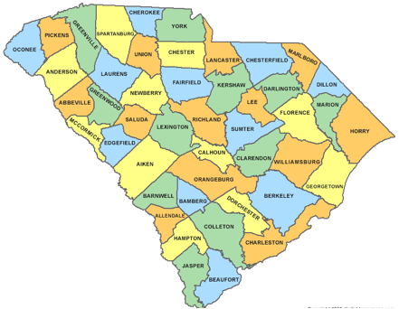
Anderson County, SC
Anderson County and its county seat, Anderson, were
named for Revolutionary War general Robert Anderson (1741-1812). This region was occupied by the Cherokee Indians until
1777, when it was ceded by treaty to the State of South Carolina. Part of the
"Indian Land" became Pendleton
District (also called Washington District at one time.) The area
was given its present name in 1826, when Pendleton District was split into
Anderson and Pickens. Most of
the early settlers of this area were Scotch-Irish farmers who migrated from
Pennsylvania and Virginia in the eighteenth century, the French family being
part of those early settlers. The oldest town in the county is Pendleton,
which was founded around 1790.
Greenville County, SC
While the lower parts of South Carolina had been settled for many years, Greenville County remained part of the old Cherokee hunting grounds and white men were strictly forbidden to enter the area. The Cherokee ceeded these lands to South Carolina in 1777. The Indians remained in their mountain homeland for several years after signing their grant, however, and not many white people ventured into the beautiful Cherokee country before the Revolution.
Wedowee, AL
Wedowee
is a small town, population 796, located in East Central Alabama. Wedowee takes its name from a Muscogee Creek Indian Chief
whose village was located adjacent to the small stream that also bears his
name. Wedowee, meaning "old water" in the Muscogee Creek language,
(1) was originally settled in the early 1830's and became the first county
seat, of Randolph County, either in the fall of 1834 or spring of 1835. The
first post office in Randolph County was established here on April 12, 1837 and
the first courthouse, built of logs, was used in 1836. Staunchly loyal to the
Union during the Civil War, many from Wedowee entered the war on the side of
the North. Known as Tories, these men bitterly opposed secession.
Interestingly, this no doubt led to William H. Smith of Wedowee, becoming
governor of the state of Alabama in July of 1868. During his administration
Randolph County, along with several surrounding counties, was deeply plunged
into fiscal debt with no hope of redemption. Because of the burden of debt, it
lost the right to govern itself and was subsequently called a
"strangulated county." Within a decade, the State relieved the County
of its debt, thereby ending a very disturbing period in their history. Wedowee
remained a small agricultural community throughout the following decades. Its
citizens marched off to war, brought back war bonds and saw many of its young
leave for larger economic areas.
First Generation
1.1Jacob French 1st -- see FFA Chart #195.
Second Generation
Children of Jacob French 1st and Martha, 1.1
2.1 George French: b. ca. 1727 in Lancaster, PA. His son George P. French continues with this line, FFA Chart #136, below.
2.2 Louisa French, b. ca. 1729, m. John Snively, and he d. 21 Jan 1792 in Antrim, Franklin Co., PA. Louisa died after John. FFA Chart #30.
2.3 Jacob French the Younger (or Jr.): b. ca. 1730, m. Magdalena Shively. Children: Barbara, Mary, George, John (Chart #194), Jacob Jr., Henry (only these sons mentioned in Jacob Sr.Õs will – George and Jacob remained in WV and John and Henry moved south – no David in this line at that time), and Elizabeth. Jacob d. in 1788. FFA Chart #195.
2.4 John Peter French, b. 1742 in Chansford, York Co., PA, m. Marie Barbara Schmeiss. Children: Elizabeth, Peter, George, John, and Catharine who moved to TN. FFA Chart #129. – check out Mong marriage
2.5 Henry French, b. 1755, resided in Harrodsburg, Mercer Co., KY. He m. Elizabeth Ersom. He d. 1821. FFA Chart #31.
2.1* George French. See details on FFA Chart #195.
Summary of Land Owned by George French in Maryland
See all George FrenchÕs land deeds under Chronology in FFA Chart #195.
See the list of land owned by George French; LandPatentOwnersWashCo1730-1830.pdf.
It is believed that Homony Rock was actually bought by the George French of FFA Chart #166.
50 acres, 1747, GeorgeÕs Venture
10 acres, 1747, Mistake
100 acres, 1752, Sly Fox
1742 acres, 1755, resurvey on GeorgeÕs Mistake
58 acres, 1759, FrenchÕs Lott
42 acres, 1759, Sly Fox
50 acres, 1760, Add. To Sly Fox
50 acres, 1760, WaggonerÕs Fancy
50 acres, 1761, Out Lot
190 acres, 1763, BurkettÕs Folly
456 acres, 1775, GeorgeÕs Adventure
93 acres, 1790, Homony Rock
Nicholas Beard was born in Germany, one of
more than 30,000 Germans who migrated to America during the 1700's
who were trying to escape religious and political persecution, and to seek
a land of greater opportunity. Nicholas Beard according to Fredrick County
Court records, show him in the present Hagerstown area
as early as 1753.
Apparently he was pleased with the Maryland Country and decided to settle here and make this his home. We see him purchasing and selling various tracts in what is now the Chewsville Election District of Washington County. On 15 November Nicholas Beard bought 164 acres of land from George French. This land was about 1 1\2 miles east of the Old Forge and Colonel Daniel Hughes' home. (Adam Lyday worked for Colonel Hughes. A beautiful Southern mansion was built in 1791 on the land by Phillip Beard, one of Nicholas' sons.
The land headquarters for the Province of Maryland
for the Hagerstown Valley was located at Conococheague Manor, from which
the Province's Surveyor operated. On August 1759, here was completed a
survey of a tract for Nicholas Beard, which consisted of the original 164
acres, which was found to contain only 148 acres, to which was added 1225
acres, or a total of 1373 acres, which was one of the largest of the early
land grants in the Chewsville District. Other early land grants in the
Chewsville District, adjoining Beard's tract "Scared from
Home" or very near it. These grants included a tract called "Wolfe's
Spring" 50 acres granted to Nicholas Beard March 15, 1762, tract
called "Dutch Lass" granted to Frances Deakins, August 8,
1771 for 80 1\4 acres: tract called "Gleanings" consisting of 1357
acres granted to Samuel Chase, and Thomas Johnson, February 17, 1764. In
the grant to Beard of "Wolfe's Spring", the
name is spelled both "Beard" and "Bard" in the same
document. This tract "Wolfe's Spring" was located about 50 perches
east of Nicholas Beard's house, " which would be in the rear of the
present "Old Forge" Elementary School.
On October 20, 1763 Nicholas Beard sold to James
Dison (a big land holder in the area) 213 acres from tracts "Bard's
Good Will" and "Resurvey of Scared from Home," and
adjoined tract "Whiskey Alley" located along the present road
leading from Cavetown to Beaver Creek, south of Pondsville. The
largest land grant in the present Chewsville District was "Resurvey
on George's Mistake," George's Venture, and the Barrens" totaling
1476 acres, and present village of Chewsville was approximately in the
center of this tract, but slightly more to the south and west of the village.
This tract was granted to George French March 1, 1775. On November 15, 1757
Nicholas Beard bought 164 acres of this tract from George French, which Beard called
"Scared from Home."
Nicholas Beard, a shrewd German
who came in by way of Pennsylvania took up two tracts of land named
"Dutch Lass" and "Scared from Hom." It was while
surveying the former that he went ahead of the surveyors and marked off which
lands he wanted, and then, when coming to an undesirable strip he would
alter his course and pass it by, thus making a very irregular boundary for
other claimants and surveyors to follow. The Surveyor called it the "Dutch
Lass." Good "Nich" had considerable difficulty with
his neighbors over these lines because they claimed they were most
unreasonable. He was too shrewd a German to permit this affair to get into
the Colonial courts, so they compromised by trading certain lands
that would straighten the lines thus making it satisfactory to all.
As a result of this and the criticism from his
neighborswe find the following land transfers by Nicholas Beard
on
October 28, 1765 to help keep the neighbors happy:
To George French 50 acres, To Leonard Stephen (probably Stephy) 202 acres , To George Wink 101 acres, To Andrew Stephen (probably Stephy} 207 acres, To Andrew Stephen (probably Stephy} 25 acres part of Wolfe's Spring. On October 24, 1763 Nicholas Beard sold to John Roher 383 acres, a tract called "John's Adventure" and part of "Scared from Home." John Rohrer, Frederick Rohrer, and Jacob Rohrer, were among the heavy land holders in the early days of the present Chewsville District. The Rohrers built the old Trovinger Mill along the Antietam Creek, across the creek from the old Antietam Church in the early 1790's. A photostat copy of the land grant "Scared from Home" has been obtained from the Hall of Records in Annapolis. The original grant containing "the great seal of the Province of Maryland and bearing a signature of Governor Horatio SharpeÓ is on file at the Washington County Historical Society. The surveyor's plot of the tract is also on file.
Lincoln County Sept 19, 1782 To the Sherrff of Lincoln County you are hereby commanded to take
Next Citation:
State vs. Supposed Torys
State of North Carolina
To the Sherriff of Lincoln County
Greetings, you are herby commanded to Summon Philip Earhart, Martin Keener, George Fink, Lemal Sanders, Robert Johnston, Thomas Anderson, Senor; Henry Slinkard, Adam Dyke, George Heager, Jacob Sits, George Sits, Abraham Earhart, Adam Killyon, George Romener, Peter Linebarger, Fredrick Heager, Thomas Beaty, James Cronester, Philip Cloonenger, Michal Cloninger, George French, Arther Bynam, Gilbert Bynam, Peter Finger, Senor; Michal Ingle, Michal Miller, Peter Snyder, Ritchard Beel, Sherod Stroud, Henry Hoover, Christian Syke, John Shegal, John Binnom, Lenard Killon, John Beel Jun'r, David Abernethy Jun'r, George Dick, James Reed, David Hutchason, Gasper Club, John Saylor, John Stroud Sen,r, John Stroud Jun,r, Simon Hager Sen,r, ______ to be and appear before the Justice of the County Cour of pleas and Quarter sessions to be held in and for the County at the Court Hous on the first Monday in January next to shew caws if any they have why their Estate Shall not be Deemed forfeited, given under our hand this 21st Day of December 1782.
Third Generation
Children of George French, 2.1
On 28 Oct 1809, the first 3 males of this family (Henry, George, and Peter) (among other family members Barbary Felkner, Evy or Cary Margret Toppin, Mary Walker, and Everett or Evy Walker) sold 200 acres on Cherokee Creek, Washington Co., TN, for $1000 to David Fulks. Three years later, Henry and George bought this land back or another nearby parcel of 200 acres [19].
3.1 Barbary French, b. ca. 1745 in VA, m. Felkner, Felker, Felken, Fleckner, or Felckner [42]. Felkner is a German name. Following the Felker family in South Carolina to where BarbaryÕs brother George moved, the 1850 and 1870 census lists Sarah Felker born in 1795, Jacob Felker in 1785, Peter Felker in 1788, William Felker in 1791 in SC and moved to TN, and Andrew Felker in 1801, all born in South Carolina.
3.2 Evy (or Eavy) Margret French, b. ca. 1746 in VA—1756??, m. Toppin [42]. On 3 Feb 1829, the Toppin tract of 790 acres went to Misses Pinckney in South Carolina. There was ÒaÓ James Tappin, b. 1740 in Virginia.
3.3 Mary French, b. ca. 1747 – 1759? in VA, m. Everett Walker.
3.4* George P. French, b. 1749 in Virginia according to the American Genealogical-Biographical Index (AGBI). His father George had died by NO NO NO 1772 when George was ca. 23 years old. George P. French married probably in Virginia and his first children were born there as this family is not listed in the 1790 census of Greenville, SC, to where they eventually moved. His 4 sons born before 1790 are John Peter, Jacob, James, and George. He is listed in Greenville, SC, in the 1800 census. He died before 1820 in Greenville, SC.
Marriage
GeorgeÕs wife was born between 1755-1765. His sons were John Peter, Jacob, James, George P. Jr. and Aaron are found in SC and AL. Could he have also married a woman named Stone as his son did? Some researchers say his wife was Annie Mae Holt, but no record has been found as such, so we are not considering this name – beware of the error.
Property Sales
George may have lived for a brief period in Montgomery Co., Maryland in 1790 before moving to Greenville, SC, but this has never been proved – see Ref. [23].
George French acquired 536 acres of land from William Pierce on the Saluda River in Greenville District, SC, in 1792, and acquired 108 acres of land from John Layman at Mountain Creek along the Saluda River in Greenville District, SC, in 1794.
On 9 Aug 1794 at age 39, George P. French is listed in Greenville Co., SC, Deed Book D, p 283: John Layman to George French, 30 pds Sterling, 108 acres, Witness: Michael Henderson, John Nelson.
On 11 Aug 1798, age 43, George P. French is listed in Greenville Co., SC, Deed Book D, p. 288, William Pierce to George French, 100 pounds Sterling, 536 acres on Saluda River.
In 1810, George P. French sold 1800 acres at Saluda River in Greenville Co., SC, to Arthur Clark.
Another deed is found in Laurens County Deed Book J, page 81, dated September 12, 1807 from "John Fields, planter to George French, blacksmith for $424. 212 acres on Cane Crk of Saluda R granted to Wm Drew Senr dec'd on 23 Jun 1774, conveyed to Sarah Right Jr [Wright], then sold by her husband Stephen Wood to James Clemens, then to John Field. Wit: Moses Madden, Thos. Cargill, S. Adams. Betsy Ann Field released her dower rights."
On 22 Sep 1810, age 64, George P. French is listed in Greenville Co., SC, Deed Book M, p 343. George French to Nathan Massey, 500 Dollars for 190 acres on Mountain Creek and Saluda River. Wit; Hewlet Sullivan Jr, Charles Sullivan, Jacob French.

LoganÕs Corps crossing the Saluda River above Columbia, SC, 1865
Census Records
In the 1800 US Census of Greenville District, SC, George P. French is head of a household of 8 persons:
2 males under the age of 10 – born after 1790,
Aaron and George P. French
2 males between the ages of 10 and 16 – born between 1784-1790, James and
Jacob French
1 male over the age of 45 – born before 1755, George P. French
2 females under the age of 10 – born after 1790, 2 daughters
1 female between 26 and 45 -- born between 1755-1774, wife
In the 1810 US Census of Greenville, SC, George French is listed with the following in his family of 9 children:
1 free while male 10-15, born between 1795-1800, Aaron
3 free white males 16-26, born between 1784-1794, Jacob, James, and George
1 free white male 45 and over, born before 1765, George P. French
1 free white female under 10, born after 1800.
1 free white female 10-15, born between 1795-1800.
1 free white female 16-26, born between 1784-1794.
1 free white female 45 and over – born before 1765, wife
In the 1820 US Census of Greenville, SC, George French is listed with a family of 4 and the entire family is under 25 years of age, indicating that this is GeorgeÕs son, George.
Death
Both George and his wife died between 1811 and 1820.
3.5 Henry French, Sr., b. ca. 1755, d. 1818 in Washington, Greene Co., TN, see FFA Chart #10.
3.6 John Peter French, b. after 1755—1765-1832, moved to Cherokee Creek in Washington Co., TN, see FFA Chart #10.
3.x Samuel French (relationship unknown), in Greenville, SC, 1790 census with 1 male under 16, 5 males over 16, 7 females, and 2 slaves. The AGBI states he was born in SC in 1750.
Fourth Generation
Children of George French, 3.4
4.1* John Peter French, b. before 1774 in VA. The 1800 census of Greenville, SC, show he was born before 1774 listing him as John P. French, and the 1810 census of Greenville indicates the same date and his name shows John French. In both the 1820 and 1830 census records, he is listed as John P. French. By the 1830 census of Greenville, SC, John was living with a free white female 10-14 (probably one of this daughters), and with a female slave, age 10-23. His wife Anna had died before 1830. This John is not the one who served in the War of 1812 as a Private in NashÕs Regiment, South Carolina Volunteers, see Ref [24].
Marriage
John Peter French m. Anna Stone on 7 Jan 1796 and had 17 children. Anna was born between 1775-1784 (per the 1800 census) in Greenville, Greenville Co., SC, but she is listed as 45+ in the 1820 census, making her birth date 1775. She was the daughter of Jonathan and Mary (Dunlap) Stone. Jonathan Stone d. 14 Mar 1809 in Greenville when his daughter Anna was 34 years old. In the 1790 census of Greenville, SC, Jonathan Stone had a family of 10. In the 1800 census of Greenville, SC, Jonathan Stone had a family of 7, further indicating that his daughter Anna had married.
Census Records
1800 Census of
Greenville, SC
John Peter French age 26-44, b. ca. 1774 and Anna Stone
1 free white male under 10, born 1790-1800, Jonathan
1 free white male, 26-44, born before 1774, John Peter French
2 free white females under 10, born 1790-1800, Sarah, Mary
1 free white female, 16-25, Anna Stone
(Note that William J. was born before 1800 but is not listed)
1810 Census of
Greenville, SC
John Peter French age 26-44, ca. 1774, and Anna Stone
5 white males under 10, George, James, Jesse, Elijah, Washington French
2 white males age 10-15, born between 1795-1800, Jonathan, William
1 free white male, 26-44, John Peter French
2 white females age 10-15, born between 1795-1800, Sarah, Mary
1 free white female, 26-44, Anna Stone
1820 Census of
Greenville, SC
John P. French, age 45+
3 white males under 10, born between 1810-1820, Zorababel 1812, Joel 1813, Asa
1820
3 white males 10-15, born between 1805-1809, Jesse 1805, Elijah 1806,
Washington 1809
3 white males 16-25, born between 1795-1804, William 1801, George 1802, James
1803
1 white male 45+, John P. French
3 white females under 10, born between 1810-1820, Anna 1815, Ursula 1817, Nancy
1818
1 white female 10-15, born between 1805-1809, Elizabeth 1810
2 white females 16-25, born between 1795-1804, Sarah 1797, Mary 1799
1 white female 45+, Anna Stone
1830 Census of
Greenville, SC
John P. French
1 free white male, 50-59, John French
1 free white female, 10-14, born 1816-1820 Ursula or Nancy
1 female slave 10-23
Land Deeds
John started buying land in the Greenville SC area in 1803 and lastly in 1822.
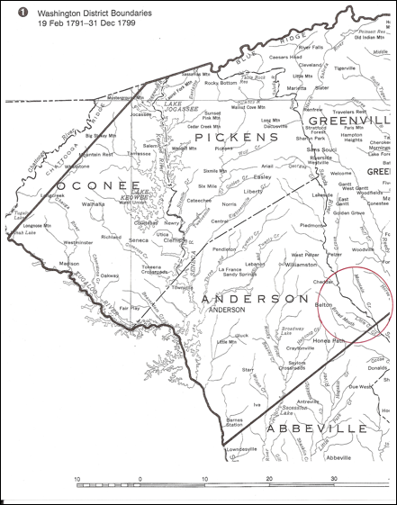
Death
John Peter French d. 5 Sep 1832, age ca. 58, in Greenville Co., SC, and is buried at the old French home place on the Saluda River, Greenville Co., SC, along with his wife, Anna, who predeceased him.
Two of their sons were buried at the same place: George, b. 1802 in Greenville, SC who m. Polly Ann Arnold. Also, William French, b. 1801 in Greenville, SC.
Stone Family
Saluda River near Mountain Creek
Note: Jonathon Stone (wife was Mary Dunlap) mentions their children in this will: Sarah, Peggy, Anna who married John French, Polly, Frances and Nancy, Stevens and Jonathan, Jr. He also mentions his father Wm. Stone and brother William, Jr., date of will Dec. 1791, Book A, p. 192, Greenville Court House, Greenville, SC Archives. Mary Stone, Jonathon's wife, mentions their eight children in her will: Frances Cox, Peggy Davis, Anna French, Polly Slaten, Frances Williams and Nancy Williams, Stephens and Jonathon Stone. Final settlement of Mary Stone by J. P. French, March 14, 1831, records in Greenville Court, Greenville, SC.
William Stone, JonathonÕs father, was b. in Oct 1710 in St. Peters, New Kent, VA, and m. Francis Taylor, d. 3 Mar 1781 in Lunenburg, Lunenburg Co., VA. They had son William Stone Jr., b. 1725 in VA who resided in 1790 in Greenville, SC, dying there in 1791, age 66. Another son was Jonathan French who married Mary Dunlap, and their daughter was Anna Stone, b. ca. 1775 who married John (Peter) French.
Nov 1806. Peter Pennell sells Samuel Williams land and mentions William HollidayÕs line on Grove Creek in Greenville, SC. Wit: John Whitt, John Peter French. (DBG:491-492, r 7 Jan 1807). In the 1820 US Census of Greenville, SC, John P. French is listed with 17 people in the household.
Estate Papers of Rebecca Stone, 1861, Greenville District, SC
4.2 Jacob French, b. ca. 1785 in VA. The 1820 census of Greenville shows only 4 males with the surname French from Greenville: Jacob, his brother George, his uncle John P., and his cousin Jonathan. Jacob has 3 people in his household over 25 and 3 people under 16. He started buying land (91 acres) in the Greenville, SC, area in 1812. Deed Book K, p 74. Noah Cobb to Jacob French, 225 Dollars, 91 acres on waters of Beaverdam Creek, Mountain Creek and Saluda River. Witnessed by Micajah Berry, Joseph Coker. On 22 Sep 1819 at age 28, Jacob French witnessed deed to George French. In 1820, Jacob was living in Greenville, SC, age 29.
4.3 James French, b. ca. 1789 in VA. He was living at home in the 1800 census of Greenville, SC. James is not the James Lewis French who was born about the same time in Spartanburg Co., SC, and married to Eleanor Shanks, whose father was Lafford French. That is FFA Chart #188.
4.4* George French, (no middle initial ÒPÓ), b. 1795 in SC, as he is listed there in the 1790 census and the 1850 census also states he was born in SC. He d. before Oct 1857 at Wedowee, Randolph Co., AL.
Marriage
George P. French m. Nancy Elizabeth Corr (known as Elizabeth) before 1818. She was b. 1798 in Caswell Co., NC and moved to Anderson Co., SC. Nancy was the dau. of John Corr and Mary (Polly) Zachary who lived in Anderson Co., SC. John Corr was b. 18 Jan 1772 in Middlesex Co., VA and d. in Anderson Co., SC on 27 Mar 1839. Mary Corr was b. in Caswell Co., NC on 8 Aug 1776 and d. in Anderson Co., SC on 28 Aug 1855. Most of John and Mary CorrÕs children moved to Alabama; three of their sons, William Corr, Laban Corr, and Jesse Corr, moved to Pickens Co., AL.
Census Records
1820 census, Greenville, South Carolina
2 free white males under 10, born 1810-1820, John and George
1 free white male 16-25, born 1795-1804, George, b. 1795?
1 free white female 16-25, born 1795-1804, Nancy b. 1798
1 male slave, 26-44, born 1776-1794
1830 census, George French, Anderson Co., South Carolina,
1840 census, George French, Campbell Co., Alabama
The 1850 census of Randolph Co., AL, George age 60, born in SC, as a farmer with real estate valued at $200. Elizabeth (52, SC), Willis (17, GA), Elizabeth (15, GA) and Ann (12, GA) are living with him. The older Elizabeth would appear to be the mother and her age fits that in the 1820 Greenville, 1830 Anderson, and 1840 Campbell Censuses.
Of interest is the fact that in the 1840 and 1850 Alabama Censuses, there also are two other Frenches who might be related to George. John C. French, age 59 and born in South Carolina is in DeKalb County, while James French, age 61 and born in South Carolina, is in Marshall County. Both these counties are about 100 miles north of Randolph County, but all three were part of the Indian cessions of the early 1800s. It is possible that these Frenches could have acquired their land through the Land Lotteries of that time, but no record has yet been found.
In the 1860
census of Rockdale, Randolph Co., AL, Elizabeth is living without George as
he had died in Oct 1869. She is living with her daughter Nancy A. French (19,
b. 1841 in GA), T. J. (Thomas Josephus) French (just born), Samantha French
Harris (18, b. 1842 in AL), M. J. (William Josephus) French (27, b. 1833 in
SC), and the Harris family.
Deeds
Dec. 1827. William Holliday witnessed George French's deed to Jacob Reese -- land on Mountain Cr. (DB P:334-335) [20].
George French left Greenville after 1836/37 as he sold off his land there, lived in Georgia for awhile, and then arrived in Alabama by 1843.
1836/1837 Book S Pg 329 Reubin Medlock bought from George French 113 ac on Mountain Creek [20].
1836/1837 Book S page 328 Greenville County John Medlock bought 90 acres on Mountain Creek from George French [20].
Death
According to other family researchers, George is the father of George William, James, John and Pinckney French, all of whom live in adjacent Chambers County. George seems to be alive in 1856 when the will of Mary Polly Corr is probated, but he does not appear in the 1860 Census. He may have passed away between December 1856 and October 1857, since he is not mentioned in the letter from Laban Corr cited in Nancy's notes. He died in Oct 1860 at age 75 in Randolph Co., AL, according to the U.S. Federal Census Mortality Schedule Index. Since this is an index of "those who died in the twelve months prior to the enumeration" and the enumeration occurred on July 26, 1860, this confirms George's death date as October 1859. The cause of death is indicated as "lungs inflamed." He was a farmer. No gravesites have been found, but George and Nancy are buried in the Old Wedowee Cemetery where there are 200 unmarked graves dating from the 1800s.
4.5 Dau. French, born after 1790 in Greenville, SC, living at home in the 1800 census of Greenville, SC.
4.6 Sarah French, b. 1794 in Greenville, SC (not yet in 1800 census?). First shows up in the 1810 census of Greenville, SC. She m. Samuel William Hall on 14 Dec 1821 in Jefferson Co., AL, and d. ca. 1823 in Jefferson Co., Alabama. On 12 Jan 1826 in Jefferson Co., AL, William Hall and wife Sarah sell to James Coker, Deed Book 2, page 187. James Coker m. Mary French, dau. of J. P. French. The dates 1823 and 1826 are in conflict with one another. Yet another record states that Samuel William Hall d. 1844 in Tuscaloosa Co., AL. This record also ties Samuel William Hall to the 1830 (with 8 white persons and 5 slaves) and 1840 (with a household of 28 persons) censuses of Tuscaloosa, Alabama. The 1850 census shows Samuel Hall, age 58, b. ca. 1792 in SC, living in Tuscaloosa, AL, with his wife, Nancy Hall, and 6 others with the surname Hall, probably his children. In the 1860 census, Sarah Hall is living with her mother as her father had died and also her husband Samuel Hall; she is 66.
Note: There is a Samuel Hall, b. ca. 1793 in SC, listed in the 1880 census of Yorkville, Gibson Co., TN, age 87, who is the father-in-law to the Scott family. Samuel Hall is a widower and black.
4.7* Aaron French, b. 12 Sep 1799 in Greenville, SC. Another researcher says Aaron and Annie were both born in NC and migrated to Alabama. He is not listed in the 1860 census because he d. 30 Jul 1855 at age 56. He m. Annie Catharine Avary in Talladega Co., AL. He d. 30 Jul 1855 in AL and is buried at the Sylacauga Cemetery in Talladega Co., AL. Another record shows he was buried on the same date but in the Fort Williams Cemetery in Talladega Co., AL. At www.findagrave.com, 12 Frenches are listed buried at the Sylacauga, Fort Williams, and Bethel Methodist Church in Talladega Co., AL.
In the 1800 and 1810 census of Greenville, SC.
In the 1820 census cannot find.
In the 1830 census of Jefferson Co., AL, Aaron is listed with 1 male under 5, 1 male 20-29 (himself), 1 female 20-29 (his wife), and 1 slave age 10-23. Aaron served in the War of 1812. His daughter, Sarah Amanda French, married Turner Benjamin Ogletree who was with Aaron French in the War of 1812.
In the 1840 census of Talladega Co., AL, Aaron is listed with 2 males under 5, 1 male 5-9, 1 male 10-14, 1 male 15-19, 1 male 30-39 (himself), 1 female 5-9, 1 female 15-19, 1 female 20-29, 2 female slaves under 10, 1 female slave 10-23. He was employed in agriculture.
In the 1850 census of Talladega, Talladega Co., AL, Aaron is listed as age 51 with his wife Ann who is 53. They have 6 children: Thomas age 16, James B. age 14, Benjamin age 11, Jefferson N. age 9, Martha age 6, and Laura age 3. Aaron is listed in the 1850 U.S. Federal Census, Slave Schedules, having 9 slaves: male age 22, female age 33, female age 13, female age 11, male age 10, female age 7, female age 4, female age 2, and female age 1.
On 5 Aug 1837 Aaron was living in Huntsville, Talladega Co., AL, where he was issued 79.96 acres of land.
1855 – Aaron died.
1860 census – Anna C. French became head of household and is listed with 6 of her 8 children living at home. Sarah Amanda (her daughter) and Thomas French (her son) were married.
4.8 Dau. French, b. after 1801 in Greenville, SC.
Fifth Generation
Children of John Peter and Anna (Stone) French, 4.1
5.1 Sarah French, b. 4 Feb 1797 in Greenville, SC, d. 3 Jun 1821 in Greenville, SC, age 25. She appears in the 1800 census of Greenville, SC, as under 10 years old.
5.2 Jonathan French,
b. 19 Jun 1798 in Greenville, SC, living in Greenville in 1820 and 1830. In the
1820 census, his household consists
of 2 people, he and his wife, both aged 16-25. He appear
in the 1800 census of Greenville,
SC, as born between 1790-1800. In the 1810
census he was born between 1795-1800. Note: I noticed in the 1800 census, that Jonathan was not listed, but he was born in
1798. I thought that couldn't be so, so I looked at the actual copy and
found he really was listed, but ancestry.com missed him in their transcription.
One must be careful. Must check the 1830, 1840, and 1850 census records.
5.3 Mary French, b. 20 Jul 1799 in Greenville, SC. She appears in the 1800 census of Greenville, SC, as under 10 years old. She d. before 1833 in death stated in JP French inventory, m. Coker. However, the 1880 census of Dunklin, Greenville Co., SC, shows a Mary French, age 81, b. ca. 1799, widowed, the sister-in-law of Aletha J. French, which would indicate that Aletha married MaryÕs brother who had died. MaryÕs brother, Jesse French, m2. Aletha Jane Lenhardt, so this is definitely the same line. It states that Mary was born in SC, her father was born in SC, but her mother was born in VA, meaning Anna Stone. Also in this same 1880 census is listed MaryÕs brother, James, age 76, showing that he was born in 1803-4, which is exactly correct for this line. However, James lists his father as born in KY and his mother in SC. We can, therefore, go on the assumption that Anna Stone was born in either VA or SC and her father John Peter French was born in either SC or KY. Mary was still alive in 1861 when the Estate Papers of Rebecca Stone were made. This family moved to AL in a small community called ÒCokerÓ NW of Tuscaloosa off Hwy 82.
5.4* William J. French,
b. 9 Feb 1801 in Greenville, SC, left Anderson Co., SC mid to late 1840Õs, and
lived in Gordon Co., GA, until late 1850Õs when they moved to Pickens Co., AL.
d. 5 Mar 1865 in Gordo, Pickens Co., AL, and is buried there Hargrove Cemetery,
Pickens Co., AL. He m. 1821 to Jane Stone in Greenville Co., SC. Jane was b.
ca. 1802 in SC and d. 24 Jan 1881 in Gordo, Pickens Co., AL. They had son Joel
who had son James William who had son Ellis C. The siblings of Ellis C. French are
Homer and Lillian French who grew up in Gordo, Pickens Co., AL. The cemetery in
Pickens Co. has a section for white people and a section for black. The French
people are fenced in the middle of the black cemetery called Hargrove. He does
not appear in the 1800 census of
Greenville, SC. In the 1810 census
shows he was born between 1795-1800.
(Line of Linda French Dawson and her brother Herb French)
5.5* George French, b. 20 Jan 1802/3 in Greenville, SC, d. 3 Oct 1868 in Senatobia, De Soto County, now Tate Co., MS, and is buried there. He m. Polly Ann Arnold ca. 1828. She was b. 13 Jun 1813 in SC (11 years younger than George), d. 3 Jun 1874 in Senatobia, MS. A descendant of his is Raiford French [15] who revealed that George French had only one child, William Arnold French, and that the family moved to Mississippi in 1857 where George died in 1868. George is found signing as a commissioner in Laurens County, SC, in Dec 1843 [20]. (Raiford Ligon French, 1931, Seattle, WA -- DNA Test F08909, 25/25 match).
Census Records
The 1810 census of Greenville, SC, shows George living with his family, under 10 years old.
The 1820 census of Greenville, SC shows George French as head of household aged 16-25, a farmer, living with a female also aged 16-25 and 2 males under 10. They had a male slave living with them, aged 26-44.
1830 census, Geo Franck (Geo French) of Laurens, South Carolina.
His parents lived in Anderson Co., South Carolina
1 free white male under 5, born 1825-1830,
1 free white male 20-29, born 1801-1810, George b. 1802
1 free white female 15-19, born 1811-1815,
1 male slave 10-23, born 1807-1820,
1 female slave, 10-23, born 1807-1820,
1840 census,
George French, Laurens, South Carolina with 7 slaves
1 free white male, 10-14
1 free white male, 20-29,
1 free white male 30-39, George, b. 1802/3
1 free white female, 20-29,
2 male slaves under 10,
1 male slave 10-23,
1 male slave 24-35,
2 female slaves under 10,
1 female slave 10-23,
1850 census,
George French, age 48, b. ca. 1802, lives in Laurens, South Carolina
George French, age 48
Sally A. French, age 37, b. ca. 1813
William A. French, age 20, b. ca. 1830
Judian French, age 23, b. ca. 1827
1860 census,
Georg French, age 58, b. ca. 1802, lives in Line Creek, Greenville, SC
Georg French, age 58
Mary H. French, age 47
Emancipation of slaves occurred on 1 Jan 1863. The 1870 census was the first census which showed the freedom of slaves, and in this case, many of them took the surname French.
The 1870
census of DeSoto Co., MS, shows Polly French (age 57, b. ca. 1813 in SC) living
with her grandson
W. A. Raiford French (age 20, b. ca. 1850 in SC, and who had moved to Crockett,
Houston Co., TX in the 1930 Census) and
Henrietta French (age 12, b. ca. 1858 in SC, black), former slave.
Living nearby in DeSoto Co., MS, on the same page in
the census is
W. A. French, a physician (age 40, b. ca. 1830 in SC), who built the French
Hotel in Senatobia, MS,
Eliza A. French (age 30, b. ca. 1840 in SC), his wife
H. Pink French (age 9, b. ca. 1861 in MS), child of William Arnold French.
George French (age 6, b. ca. 1864 in MS), child of William Arnold French.
Lilly French (age 5, b. ca. 1865 in MS), child of William
Arnold French.
Burrell (Butlar) M. French (age 3, b. ca. 1867 in MS), child of William Arnold
French.
On same census page, unknown relationship (after
emancipation of 1 Jan 1863):
Rebecca French (age 13, b. ca. 1857 in SC, Mulatto),
Jane French (age 14, b. ca. 1856 in SC, black),
Ike French (age 36, b. ca. 1831-1834 in SC), (off-spring of Judy), farmer,
mulatto, m. Artemissee and had children Leona, Dora, Jessie, Lillie, and Leona
all named in the 1900 census of Tate co., MS. Ike is buried in the Highway 51
Cemetery in Sentobia, Tate Co., MS.
Charlotte French (age 21, b. ca. 1849 in AL, black), is buried in the Highway
51 Cemetery in Sentobia, Tate Co., MS.
Clancy French (age 7, b. ca. 1863 in MS, black), and
John French (age 4, b. ca. 1866 in MS, black).
In the 1930
census of Tate Co., MS, John is 63, negro, living
with his daughter Altha French, 15.
Also in this 1930 census on the same
page in Tate Co., MS, is Frank French, 36, b. ca. 1894 in TN, negro, living
with his wife Omega French, 30, b. ca. 1900, negro. They are living with their
children: son Theona, 11, b. ca. 1919; son G. W., 10, b. ca. 1920, negro; son J. C. French, 8, b. ca. 1922, negro; and Tomas L.
French, 1, b. ca. 1929, negro.
In the 1920 census of Tate Co., MS, John is 53 living with his wife Annie, 44, and their 3 children: Ruth 13, John 9, and Altha 5. In the 1910 census of Tate Co., MS, John is identified as a mulatto, living with Annie, also identified as a mulatto.
In Memory of Judy, born ca. 1815, with 4 children who came to Senatobia, MS, from SC and took on the name French and served as slaves. JudyÕs offspring became landowners. This marker is at the Highway 51 Cemetery in Senatobia, Tate Co., MS. Buried at the Highway 51 Cemetery in Sentobia, Tate Co., MS:
Caroline French, unknown birth and death dates
Frances French, unknown birth and death dates
Ike French, b. 1831, d. unknown.
Judy French, b. 1815, d. unknown.
Toab French, unknown birth and death dates
On p. 19 of the 1870 census of Senatobia, Nelson and Rose Raiford list their children as Martha (12), Road (5), Lotte (8), and Tillie (1), all born in Alabama and black. After the Raiford family comes a large Blackburn family also lived in the same immediate area in 1870 who are all black and who could have been part of FFA Chart #23 only because a large French who married into a Blackburn family lived in Canada; the French family in Canada has the same DNA Test Results as Group 4.
Blackburn, Thornton and Ruth (or Lucie). The Blackburns were escaped slaves from Louisville, KY. They had been settled in Detroit, Michigan, for two years when, in 1833, Kentucky slave hunters captured and arrested the couple. The Blackburns were jailed but allowed visitors, which provided the opportunity for Ruth to exchange her clothes - and her incarceration - with Mrs. George French; Ruth escaped to Canada. The day before Thornton was to be returned to Kentucky, the African American community rose up in protest. While the commotion was going on, Sleepy Polly and Daddy Walker helped Thornton to escape to Canada. The commotion turned into a two-day riot and the sheriff was killed. It was the first race riot in Detroit, and afterward the first Riot Commission was formed in the U.S. Once in Canada, Thornton designed, built, and operated Toronto's first horse-drawn carriage hackney cab and cab company. He was born in Maysville, KY in 1812. Ruth died in Canada in 1895. For more see The Detroit Riot of 1863; racial violence and internal division in Northern society during the Civil War, by A. S. Quinn; I'v Got a Home in Glory Land by K. S. Frost; and Thornton and Lucie Blackburn House. Ref.: http://www.uky.edu/Libraries/NKAA/all.php?sort_by=B, Notable Kentucky African Americans – Complete A-Z List.
Note: The 1860 census of Line Creek, Greenville, SC shows a George (age 58) with his wife Mary H., (age 47) b. ca. 1813 in SC. This was probably not the George French, b. 1802, mentioned above, as he had already moved to Mississippi. However, George could have returned from Mississippi to Greenville just at the time the census was taken as he is found nowhere else. The French family in Line Creek lived next door to Jesse French.
Legal Documents
George bought 203 acres of land in Greenville from William Arnold. George also bought property in Greenville in 1794 from John Laymon.
Death
George and Polly moved to Mississippi ca. 1857 where George died 3 Oct 1868 in Senatobia, De Soto County, now Tate Co., MS, and is buried there. Polly Ann Arnold d. 3 Jun 1874 at age 60 in Senatobia, MS.
5.6 James French, b. 9 Sep 1803 in Greenville, SC, d. 12 Mar 1885 in Greenville, SC.
The 1810 census of Greenville, SC, shows James living with his family, under 10 years old.
The 1880 census of Dunklin, Greenville Co., SC shows that James was b. ca. 1804 in SC, and that his father was born in KY and his mother in SC; Jesse was living with his sister, Mary French, and his sister-in-law Aletha J. French in Dunlin, Greenville Co., SC.
In the 1870 census, James was living in Dunklin, Greenville Co., SC with his brother Jesse and JesseÕs wife Aletha. JamesÕ wife had died by the 1880 census and James was living with his sister, Mary French (born 1799 in SC – her father was born in SC and her mother in VA) and his sister-in-law Aletha J. French (born 1825 in SC – her father was born in NC, mother in SC). All three (James, Mary, Aletha) were widowed. Aletha was Aletha Jane Lenhardt who married JamesÕ brother Jesse.
5.7* Jesse French, b. 18 May 1805 in Lower Greenville Co., SC, d. 2 Jul 1878 in Greenville, SC, m1. Ailsey (Alley) Traynam on 13 Dec 1825, m2. Aletha Jane Lenhardt on 20 Dec 1855 in Greenville, SC. Jesse owned 1800 acres along the Saluda River when he died. His land was on both sides of Highway 76 near Princeton.
The 1810 census of Greenville, SC, shows Jesse living with his family, under 10 years old.
In the 1850 census, Jesse was living with his wife Alley who was a year older than he was, and with their son George W. French who was b. 1831 in SC. In the 1860 census of Line Creek, Greenville Co., SC, Jesse is living with his wife, Aletha L. who was 18 years younger than him (b. 1825 in SC), and their 5-year old son William J. French who was b. in 1855 in SC.
Living next door to them in 1860 was George French, age 58, b. ca. 1802, and his wife Mary H., age 47, b. ca. 1813.
In the 1870 census of Dunklin, Greenville Co., SC, Jesse is 65 and living with his brother James and JamesÕ wife Aletha.
In the 1880 census of Dunlin, Greenville Co., SC, after Jesse had died, Aletha is living with her sister-in-law Mary French and her brother-in-law James. Jesse may have m. Mrs. Jane Smith of Greenville in 1856 according to the Greenville, South Carolina Marriage and Death Notices, 1826-1863.
5.8 Elijah French, b. 5 Nov 1806 in Greenville, SC, m. Harriett Higgs on 1 Jul 1829 in Greenville, SC and is listed in the Greenville, SC Marriage and death Notices, 1826-1863. The 1810 census of Greenville, SC, shows Elijah living with his family, under 10 years old.
5.9 John French, b. 28 Jan 1808 in Greenville, SC, d. 8 Nov 1809 in Greenville, SC, in infancy. (not in 1810 census)
5.10 Washington French, b. 4 May 1809 in Greenville, SC.
The 1810 census of Greenville, SC, shows Washington living with his family, under 10 years old. The 1860 census of Attala, MS, lists Washington as age 51, b. ca. 1809, living with his wife Ellener, age 39, and Wm J. B. W. French, age 3.
5.11 Elizabeth French, b. 16 Dec 1810 in Greenville, SC, m. before 1832 to Larkin Davis. She appears first in the 1820 census
5.12* Zorababel B. French, b. 4 Apr 1812 in Greenville, SC. [the name Zorobabel French appears earlier in the 1800 census of Kent Co., MD – he is over 45 years old]. Zorobabel m1. Elizabeth Clark on 4 Oct 1849 in Mobile Co., AL, and he m.2 Celia Roberts on 10 Feb 1852 in Mobile Co., AL. He appears first in the 1820 census. He appears in the 1850 census of Mobile Co., AL living with Elizabeth and their newborn son Sydney. By the 1860 census, he has remarried but lives in the same town with his wife Celia who was b. ca. 1830 In MS, and their 2 children, David C. French (7, b. 1853 in AL) and William F. French (3, b. 1857 in AL).
5.13* Joel E. French, b. 9 Dec 1813 in SC, m. Nancy and was a farmer. He appears first in the 1820 census. He lived in the 1850 census in Pickens Co., AL, where he is listed with his wife Nancy, b. ca. 1825, and their 3 children: Mary b. 1840; William b. 1842; Stephen b. 1847. The 1860 census shows Joel E. age 46, Nancy age 37, William H. age 17, Sebron J. and 12, Martha C. age 11, John R. M. age 7, and James C. age 4. The 1870 census of Tallahatchie, MS, show Joel age 57, Nancy age 47, son John R. age 17, and James C. age 12. The 1880 census of Tallahatchie, MS shows Joel E. 66 living with Martha J. age 48, living without their children, he is a farmer, and it does not give his fatherÕs birth place.
5.14 Anna French, b. 21 Jul 1815, m1. Wiley Reeves, son of George Washington Reeves and Ruth Crump, in about 1828. They are in the 1830 census in Greenville, SC with one daughter. (He is mistakenly listed as Wiley Ruis.) Wiley died in about 1841 in De Kalb, Georgia. WileyÕs sister Cynthia also died about the same time in De Kalb. Anna remarried to CynthiaÕs widower, Redden Reeves. Redden was unrelated to Wiley (dna testing bears this out.) Anna and Wiley had 6 children; Anna and Redden had 8 together. Redden and Cynthia had 6 children [12].
5.15 Ursula French, b. 13 ____ 1817 in Greenville, SC, m. James Dobbs. She appears first in the 1820 census.
5.16 Nancy French, b. 13 Aug 1818 in Greenville, SC, m. Wilson Saxton. She appears first in the 1820 census.
5.17 Asa French, b. 17 Jun 1820 in Greenville, SC, d. 14 Feb 1902 in Waelder, Fayette Co., TX, m. Catharine in 1852. The 1850 census shows Asa and Catharine living in Columbus Ward 3, Lowndes Co., MS.
The 1880 census states that both his parents were born in SC. The 1860 census of Caldwell, TX show Asa, age 40, living with his wife Catharine, age 35, and their children: Lora L. French (7) and Charles H. C. French (4). On 2 Jun 1880 Asa was living in Gonzales Co., TX, and working in agriculture. The 1890 census lists Asa and his wife living in Gonzales Co., TX with their son C. A. French, his wife, and their 6 children.
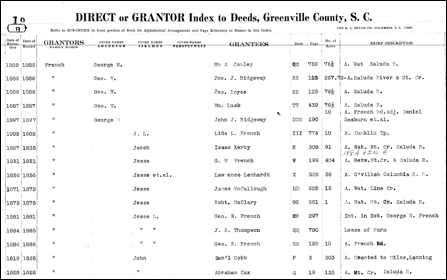
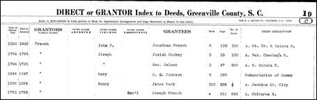
Note the early names of Joseph French in 1795 and Samuel French in 1793; they both must have been born before 1775 and are not of this chart, but probably of FFA Chart #146 or #184.
Grantee – a person to whom a grant is made.
Grantor – a person who makes a grant.
Lida L. French and J. L. French, see 6.6
Saluda or Santee River in Greenville Co., South Carolina, below.
NOTE: Details of the following material can be found on Fred Williams research at http://www.frenchfamilyassoc.com/FFA/CHARTS/Chart136/DescendantReport-8.pdf.
Children of George and Nancy (Corr) French, 4.4
5.18* John French, b. 18 Jul 1818 in Greenville Co., SC, m. Lucinda Bachelor in Campbell Co., GA on 6 May 1841, the daughter of William Bachelor and Sally Smith. She was b. in 1823 in GA and d. between 1854-1860 in Chambers Co., AL. John owned land in Campbell Co. during the 1840s. In the 1840 census there are no George Frenches in either SC or AL; the only George French in Georgia is in Campbell Co. (annexed by Fulton in 1932). The 1900 census of Morris Co., TX shows John is widowed, b. Jul 1818 in SC, and that both his parents were born in SC. He d. 29 Jan 1905 in Morris Co., TX. They had at least 5 children: Joseph Hilliard, James Washington, George M., Susan, and Frances.
5.19* George William French, b. 31 Dec 1820 in Anderson Co. or Greenville Co., SC and d. 17 May 1911 in Randolph Co., AL. George W. French was a Randolph County Commisioner in 1892. He m. Anna Amanda Avary (Awbrey) aka Andy or Mandy Armanda Avery Higginbotham on 11 Dec 1846 in Chambers Co., AL. One of these surnames was probably from a previous marriage. She was b. 1836 in Greenville Co., SC according to the 1880 census when she was age 44; however, this date does not coincide with her 1846 marriage date and the birth of their first child in 1843, so a lot more research needs to be done. She d. 18 Dec 1919 in Randolph Co., AL. The cemetery record says she died in 1896. Both are buried at the Union Baptist Church Cemetery in Newell, Randolph Co., AL.
The 1870 census shows G. W. French, age 52, b. ca. 1818 in SC, living in Randolph Co., AL with wife Amanda, age 44, and 7 children.
The 1880 census shows George W. French born in 1820 in SC, living in 1880 in Morrisons, Randolph Co., AL, age 60, a farmer, whose father and mother were both born in Virginia.
Family legend has it that George William French worked on the first railroad to reach Atlanta, so he may be living away from home. "In December 1833, only three months after completion of the Charlestown-Hamburg line, the state of Georgia had chartered three railroads in a single week - and by the close of 1842 the 104-mile Georgia Railroad reached from Augusta to Madison and was moving toward White Hall, the future Atlanta. . . . [However, by 1845 Atlanta existed only as a remote railroad station, which the Georgia Railroad from Augusta had reached with its first locomotive drawn by oxen, an ignominious beginning for the future rail center of the Southeast." [Davis, Burke. "The Southern Railway," UNC Press, Chapel Hill, 1985. Pp. 103-105.] Since the location of Campbell County follows the general direction of the westward movement, it is likely that this is the family of our George (the Elder), and he also may have worked on the railroad. It is even possible that he had worked on the earlier 136-mile South Carolina line, built 1829-33, the first railroad in America of more than one hundred miles in length.

AtlantaÕs railroad was destroyed in 1864, top and bottom.
George W. French was granted 76 ½ acres of land along the Saluda River in 1885.
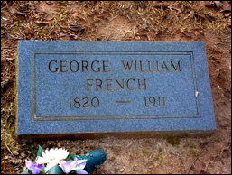
The 1850 census of Chambers, Alabama, shows George W. French (29) living with his wife Amanda (24) and his children: Amanda Q. French (1) and Nancy A. French (2), and his brother Pinckney G. French (24). The 1860 census shows George W. French (40), living with his wife A. A. (36), and his children: A. J. French (11), Nancy E. French (13), Lavona W. French (8), G. W. French (6), Pinckney G. French (4), Mary F. French (3), Lucinda M. French (2.12), and his brother P. G. French (36).
The 1870 census of Randolph Co., AL in Wedowee shows George W. French (52), living with his wife Amanda (44) and their children: George N. French (16), Pinkney G. French (13), Mary F. French (11), Sarah E. French (10), Lucinda M. French (8), John R. French (7), and Louisa J. French (1).
The 1880 census of Morrisons, Randolph Co., AL shows George (60), b. in SC, his father born in VA and his mother born in VA, working as a farmer and living with his wife Andy Amanda French (44), and children: John R. French (17) and Cinda M. French (18).
The 1850 census of Randolph Co., AL show George aged 60, b. ca. 1790 in SC, living with his wife, Elizabeth (52, born in SC), and their children all born in GA: Willis French (17), Elizabeth French (15), and Ann French (12). The 1860 census (George had died in 1857) lists Nancy French as 60, b. ca. 1800 in SC, living in Randolph Co., AL with the Harris family and M. J French (27), Samantha French (18), T. J. French (1/12), and Nancy A. French (19).
The 1880 census shows George in Morrisons, Randolph Co., AL, age 60, born in SC, a farmer, whose father and mother were both born in Virginia. It also shows that both the parents of George William French Sr. (age 60 at that time) were born in Virginia. This could indicate that his father was from Berkeley Co., WV, and connected to FFA Chart #195; early on WV was part of VA. Jacob of FFA Chart #195 could have been GeorgeÕs uncle.
5.20 James French, b. 1823 in SC, d. ca. 1850 when he was 17 and working as a farmer on the farm of John Caw in Chambers Co., AL.
5.21 Pinckney G. (P.G.) French, b. 1826 in SC. Lived most of her life with her brother George and didnÕt marry. She is listed in the 1850 census of Chambers Co. and in the 1860 census of Randolph Co., SC.
5.22* Willis Joseph French, b. 1833 in GA. Willis is listed in the 1850 census of Beat 6, Randolph Co., AL, living with George and Elizabeth French, his grandparents. Willis was 17 years old and born in Georgia. George French was age 60; therefore born in 1790, and Elizabeth was 52; therefore born in 1798. After WillisÕ birth, the family moved to Georgia. In the 1880 census, Willis (aka William) is living in Mojave, San Bernardino, CA, a farmer. He died between 1864-1865 in a Civil War Prison. He m. Samantha E. Harris on 24 Nov 1858 in Randolph Co., AL. She was b. in 1842 in GA, and d. 28 Jan 1922 in Newell, Randolph Co., AL.
5.23 Elizabeth French, b. 1835 in GA. Elizabeth is listed in the 1850 census of Beat 6, Randolph Co., AL, living with George and Elizabeth French, her grandparents. Elizabeth was 15 years old and born in Georgia. George French was age 60; therefore born in 1790, and Elizabeth was 52; therefore born in 1798.
5.24 Nancy Ann French, b. 1838 in GA. Ann is listed in the 1850 census of Beat 6, Randolph Co., AL, living with George and Elizabeth French, her grandparents. Ann was 12 years old and born in Georgia. George French was age 60; therefore born in 1790, and Elizabeth was 52; therefore born in 1798.
Children of Aaron and Annie Catharine (Avary) French, 4.7
5.25 Sarah Amanda French, b. 25 Nov 1831 in Sylacauga, Talladega, AL, d. 2 Feb 1905 in Talladega County, AL, age 74. She m. John Turner Benjamin Ogletree on 22 Feb 1849. He was with his father-in-law Aaron French in the War of 1812. Sarah was listed in the 1840 census of Talladega County, AL. They had about 11 children. She was buried at the Marble City Cemetery in Sylacauga, Talledega Co., AL. John was probably buried near where he was killed close to Chattanooga, TN.
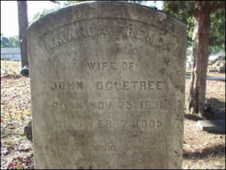
5.26 Thomas French, b. 1832 and is in the 1850 census of Talladega, Talladega Co., AL. Listed as 5-9 in the 1840 census of Talladega Co., AL.
5.27 James B. French, b. 1836 and is in the 1850 census of Talladega, Talladega Co., AL. Listed as under 5 in the 1840 census of Talladega Co., AL. By the 1860 census of Talladega, his father must have died as he is not listed.
5.28 Benjamin French, b. 1839 and is in the 1850 census of Talladega, Talladega Co., AL. Listed as under 5 in the 1840 census of Talladega Co., AL.
5.29 Jefferson Nicholas French, b. 1841 and is in the 1850 census of Talladega, Talladega Co., AL.
5.30 Martha French, b. 1844 and is in the 1850 census of Talladega, Talladega Co., AL.
5.31 Laura Anna French, b. 1847 and is in the 1850 and 1860 census of Talladega, Talladega Co., AL.
5.32 Mary French, b. 1852 and is in the 1860 census of Talladega, Talladega Co., AL.
Slaves of this French Family
1. male slave French, b. 1828 and is in the 1850 census of Talladega, Talladega Co., AL.
2. female slave French (Tempy French?), b. 1817 and is in the 1850 census of Talladega, Talladega Co., AL. She was living with Aaron in the 1830 census of Jefferson Co., AL. She is listed as a female slave under age 10 in the 1840 census of Talladega Co., AL. Another female slave under age 10 in the 1840 census of Talladega Co., AL, is also listed.
3. female slave French, b. 1837 and is in the 1850 census of Talladega, Talladega Co., AL.
4. female slave French, b. 1839 and is in the 1850 census of Talladega, Talladega Co., AL.
5. male slave French, b. 1840 and is in the 1850 census of Talladega, Talladega Co., AL.
6. female slave French, b. 1843 and is in the 1850 census of Talladega, Talladega Co., AL.
7. female slave French, b. 1846 and is in the 1850 census of Talladega, Talladega Co., AL.
8. female slave French, b. 1848 and is in the 1850 census of Talladega, Talladega Co., AL.
9. female slave French, b. 1848 and is in the 1850 census of Talladega, Talladega Co., AL.
Slaves from Frederick Co., VA
1. Sarah French, b. 1783, lived in Winchester, Frederick Co, VA in the 1860 census, mulatto, listed with the Robinson family.
2. Sarah French, b. 1805, lived in Winchester, Frederick Co., VA in the 1850 census, mulatto, listed with the Robinson family.
3. Fannie French, b. 1840 in PA, both father and mother were born in PA, white, single, cousin to the Barnhart family, listed in Winchester, Frederick Co., VA, in the 1880 census.
Other Frenches born in Talladega, Talladega Co., AL
Prento French, b. ca. 1855 in AL, her father was b. in TN, mother in SC, her name was Tempy, black
Tempy French, b. ca. 1816 in SC, both parents born in SC, widowed in the 1880 census, black, but listed as mulatto in the 1870 census. Could she have been Aaron FrenchÕs mistress? He was born in 1799 in SC and d. before 1860.
Woods French, b. ca. 1857 in AL, son of Tempy, black
Evira French, b. 1860 in AL, dau. of Tempy, black, but listed as mulatto in the 1870 census
Samuel French, b. 1843 in AL, listed as mulatto in the 1870 census
Emanuel French, b. 1851 in AL, listed as mulatto in the 1870 census. In the 1880 census of Talladega, Talladega, AL, it states he was b. ca. 1842 in AL, married to Eliza French, both parents born in AL, black. Eliza was b. 1850. Their dau. was b. 1879 in AL, black.
William French, b. 1853 in AL, listed as mulatto in the 1870 census
Prince French, b. 1856 in AL, listed as mulatto in the 1870 census
Woods French, b. 1858 in AL, listed as mulatto in the 1870 census
Elvira French, b. 1860 in AL, listed as mulatto in the 1870 census
Rachael French, b. 1847 in AL, mulatto, in the 1870 census lived with the Simmons family.
Emancipation occurred on 1 Jan 1863; therefore, these slaves were listed as free people in the 1870 census.
In the 1900 census of Talladega, Talladega Co., AL, Manual French listed above was b. Feb 1852 in AL, black, and both parents were born in AL, his wife was Eliza French whom he married in 1878, and had 5 children:
William French, b. 1882 in AL, black
Manuel French, b. 1884 in AL, black
Nona French, b. Mar 1887 in AL, black
Sadie French, b. 1890 in AL, black
Palmer Henry French (son), b. 5 May 1891 in AL, black. He enlisted in WWI in
Lake Co., IL.
Sixth Generation
Children of William J. and Jane (Stone) French, 5.4
6.1 Jefferson E. French, b. 1822, m. Mary C. Solomon on 14 Aug 1856 in Bartow, Gordon Co., GA. They had dau. Martha E. French b. ca. 1857.
6.2 Edney Martha French, b. 24 Feb 1824, m. Francis Marion Green who was b. 4 May 1828 in Anderson Co., Pendelton Dist., SC, d. 12 Nov 1896 in Gordon Co., GA, and had 3 children: Virginia A. Green, Savannah B. Green, and Penelope Vienna Green.
6.3* James Fred French, b. ca. 1828 in Greenville, SC, d. 4 Mar 1858 in Gordon Co., GA, at age 30, m. Harriet C. Bell. She was b. 22 Jul 1833 in Spartanburg, SC, d. 13 Sep 1906 in Gordon Co., GA. They had one son, Thomas Jefferson French.
6.4* William G. French, b. 23 May 1831 in SC, d. 4 Aug 1898 in SC, m. Mary Francis Carter who was born on 1 Aug 1835, d. 4 May 1893 at age 57, and had 5 children: infant, Jamie, Jesse L., Sally John, and Annie.
6.5 Jesse Mercer French, b. 5 Nov 1834 in SC, d. 17 Mar 1893, age 58, m. Esther Mahala Floyd on 24 Aug 1856. She d. 19 Jul 1915. Children to be added later.
6.6* Joel Ellison French, b. 26 Apr 1842 in Greenville, SC, d. 10 Oct 1912 in Gordo, Pickens Co., AL, m. Mary Frances Bedford nee Byars, a widow, on 5 Jan 1868 in Pickens Co., AL. Mary was b. 16 Sep 1833 in AL, d. 22 Jan 1907 in Gordo, Pickens Co., AL at age 73. There are Bedford children: Joel and Mary Frances had 3 children creating Linda French Dawson and Herb French line. Joel who had son James William, who had son Ellis C. French. The siblings of Ellis C. French are Homer and Lillian French who grew up in Gordo, Pickens Co., AL. The cemetery in Pickens Co. has a section for white people and a section for black. The French people are fenced in the middle of the black cemetery called Hargrove.
6.7 Hulda L. ÒHuldyÓ French, b. 24 May 1845.
6.8 Christopher Columbus ÒLumÓ French, b. ca. 1848.
Children of George and Polly Ann (Arnold) French, 5.5
6.9* Dr. William Arnold French (known as Dr. W. A. French), b. 15 Nov 1829 in SC, the only child of Polly Ann and George French. Dr. French built the hotel and operated his practice from the French Hotel which they owned and operated until 1912. After that time, their son Jesse French was owner. Arnold practiced medicine in Senatobia until 1903 and in 1878 was awarded a gold medal, "A Memorial for services rendered during the Epidemic of Yellow Fever in Senatobia." His favorite prescription for most any illness, was a "few drops of turpentine on a little sugar, followed by a generous dose of Castor Oil." He died in 1903 and is buried in Bethesda Cemetery.
Marriage
Dr. W. A. French m1. Judith Ann Raiford in 1850 and they had a son William Arnold Raiford French (WAR French), and she must have died shortly thereafter as they had no descendants that we know of yet.
Dr. W. A. French m2. Eliza Ann McGee on the 15 Sep 1859. She was b. 5 Jan 1839 in SC and d. 15 May 1912 in Senatobia, MS. They had thirteen children, the last living one was Arnold French (1965) of Los Angeles, California. Dr. French and his wife owned the French Hotel and operated it until 1912, after that time his son Jesse French was owner. He practiced medicine in Senatobia until 1903 and in 1878 was awarded a gold medal, "A Memorial for services rendered during the Epidemic of Yellow Fever in Senatobia." His favorite prescription for most any illness, was a "few drops of turpentine on a little sugar, followed by a generous dose of Castor Oil." He died in 1903 and is buried in Bethesda Cemetery.
Census Records
The 1870
census of DeSoto Co., MS, shows Polly French (age 57, b. ca. 1813 in SC –
mother of W.A. French) living with her grandson
W. A. Raiford French (age 20, b. ca. 1850 in SC, and who had moved to Crockett,
Houston Co., TX in the 1930 Census) and
Henrietta French (age 12, b. ca. 1858 in SC, black), unknown relationship.
Living nearby in DeSoto Co., MS, on the same page in
the census is
W. A. French, a physician (age 40, b. 15 Nov 1829 in SC), who built the French
Hotel in Senatobia, MS,
Eliza A. French (age 30, b. ca. 1840 in SC),
H. Pink (Pinkney) French (age 9, b. ca. 1861 in MS), child of William Arnold
French.
George French (age 6, b. ca. 1864 in MS), child of William Arnold French.
Lilly French (age 5, b. ca. 1865 in MS), child of William
Arnold French.
Burrell (Butlar) M. French (age 3, b. ca. 1867 in MS), child of William Arnold
French.
Plus these children who were connected to Dr. W. A.
French in someway before he got married. It is said that he brought 100 slaves
with him when he moved from SC to MS in 1857, and after emancipation on 1 Jan
1863, these free slaves continued to work with him and remain part of the
household on a free status.
Rebecca French (age 13, b. ca. 1857 in SC, Mulatto),
Jane French (age 14, b. ca. 1856 in SC, black),
Ike French (age 36, b. ca. 1834 in SC), (off-spring of Judy), farmer, mulatto,
m. Artemissee and had children Leona, Dora, Jessie, Lillie, and Leona all named
in the 1900 census of Tate co., MS.
Charlotte French (age 21, b. ca. 1849 in AL, black),
Clancy French (age 7, b. ca. 1863 in MS, black), and
John French (age 4, b. ca. 1866 in MS, black).
In Memory of Judy, born ca. 1815, with 4 children who came to Senatobia, MS, from SC and took on the name French and served as slaves. JudyÕs offspring became landowners. This marker is at the Highway 51 Cemetery in Senatobia, Tate Co., MS.
On p. 19 of the 1870 census of Senatobia, Nelson and Rose Raiford list their children as Martha (12), Road (5), Lotte (8), and Tillie (1), all born in Alabama and black. After the Raiford family comes a large Blackburn family also lived in the same immediate area in 1870 who are all black and who could have been part of FFA Chart #23 only because a large French who married into a Blackburn family lived in Canada; the French family in Canada has the same DNA Test Results as Group 4.
In the 1880 census, William A. (51) and Eliza Ann (40) are listed as living in Senatobia, Tate Co., MS. Both of his parents were born in SC. He was living with children Pinckney (18), George (16), Lillie (14), Butlar M. (12), Arnold (9), Annie (7), Jessie French (3).
In the 1900 census, William (70) and Eliza (61) are listed with Arnold (29-son, b. May 1871 in MS), Jesse (23-son, b. May 1877 in MS), Lora E. (26-daughter-in-law, b. 1874 in Mar MS, m. 1895), Raiford (3-grandson, b. Jul 1896), Arnold (1-grandson, b. Aug 1898 in MS). All white.
____________________
Compilers Note: Dr A M
(Arnold) FRENCH should read: WILLIAM A R FRENCH. Manuscript was later
corrected.
GEORGE FRENCH, born in 1802, and POLLY ANN ARNOLD, born in 1813, were married in 1829. Their only son, ARNOLD FRENCH, and wife, ELIZA ANN McGEE, had the following children: LILY FRENCH, ARNOLD FRENCH, GEORGE FRENCH and JESS FRENCH.
DR W A FRENCH came to Senatobia in 1868 to practice medicine. He was decorated by the government for staying in Senatobia during the yellow fever epidemic of 1878 to care for the sick. One of DR FRENCH'S 13 children, LILLY, was married to HALCOTT INSCOE GILL.
W.A. FRENCH was a physician and built the FRENCH Hotel, which stood on Ward Street in Senatobia.
LILY FRENCH married H. I. GILL and lived in Senatobia next to the Court House. Their daughter, MRS. J. C. BOWEN, lived in Senatobia.
ARNOLD FRENCH was in the grocery business in Senatobia. GEORGE FRENCH was a salesman and lived in Memphis, TN. JESS FRENCH operated the FRENCH Hotel until his death.
The FRENCH family was one of the early settlers of Senatobia, moving here in 1857.
LILLY FRENCH married HAL J. GILL 26 Jan 1886 Bk4 Pg283
ARNOLD FRENCH married LORA E. LIGON 18 Aug 1895 Bk8 Pg109
ANNIE E FRENCH married D. M. COOLEY 18 Aug 1895 Bk8 Pg108
Buried at Bethesda, Mississippi:
GEORGE FRENCH, Jan 20, 1803-Oct 3, 1868
POLLY ANN FRENCH, June 13, 1813-June 3, 1874
B.M.FRENCH, age 24 yrs
P.H.FRENCH, age 32 yrs
MRS. ANNIE FRENCH C. age 26 yrs
INFANT 40 days
MARY T. FRENCH, May 3, 1853-April 21, 1860
MINNIE LEE FRENCH, Aug 19, 1862-Feb 13, 1864
INA M. FRENCH, Aug 15, 1869-Mar 22, 1870
Twin Infants of W.A. & E.A. FRENCH, born Jan 12, 1868, and died Feb 1, & June 10, 1868
Infant born Dec 8, 1873-Dec 16, 1873
DR.W.A.FRENCH, Nov 15, 1829-Dec 20, 1903
E.A.FRENCH, Jan 5, 1839-May 15, 1912
ARNOLD FRENCH COOLEY, Oct 22, 1899-Nov 30, 1899
ANNIE FRENCH COOLEY, Apr 21, 1873-Oct 30, 1899
PINK FRENCH, June 3, 1861-Mar 20, 1893
LILY FRENCH GILL, Feb 28, 1865-Aug 23, 1903, married Jan 26, 1886
HALCOT I. GILL, 1857-1919
Source: A History of Tate County 1975, Footprints in Time, Tate County Marriages, see: http://www.msgw.org/tate/refer.html.

FRENCH Hotel on Ward Street in Senatobia, MS
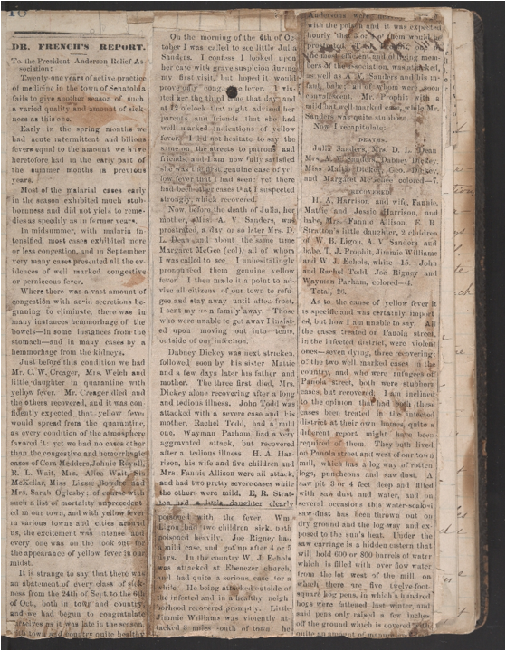
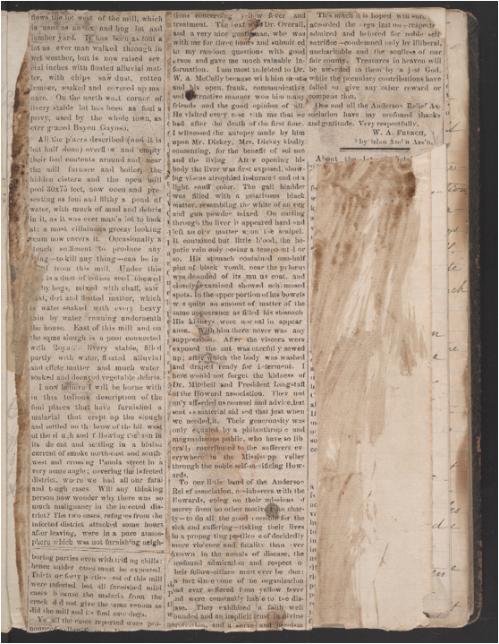
Dr. W. A. FrenchÕs Report, news clipping describing the Yellow Fever epidemic in Senatobia in 1879. See: http://scholarship.rice.edu/jsp/xml/1911/27111/1/aa00184_30.tei.html.
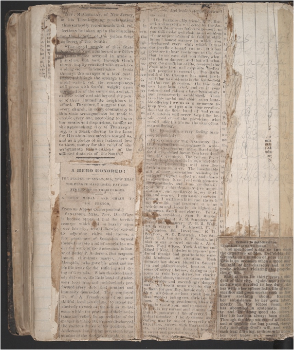
The above article transcribed:
To the President Anderson Relief Association:
Twenty one years of active practice of medicine in the town of Senatobia fails to give another season of such a varied quality and amount of sickness as this one. Early in the spring months we had acute intermittent and bilious fevers equal to the amount we have heretofore had in the early part of the summer months in previous years. Most of the malarial cases early in the season exhibited much stubbornness and did not yield to remedies as speedily as in former years. In midsummer, with malaria intensified, most cases exhibited more or less congestion, and in September very many cases presented all the evidences of well marked congestive or perniceous fever. Where there was a vast amount of congestion with acrid secretions beginning to eliminate, there was in many instances hemmorhage of the bowels—in some instances from the stomach—and in many cases by a hemmorhage from the kidneys.
Just before this condition we had Mr. C. W. Creager, Mrs. Welch and little daughter in quarantine with yellow fever. Mr. Creager died and the others recovered, and it was confidently expected that yellow fever would spread from the quarantine, as every condition of the atmosphere favored it: yet we had no cases other than the congestive and hemorrhagic cases of Cora Medders, Johnie Royall, R. L. Wait, Mrs. Alice Wait, Sis McKellar, Miss Lizzie Bowdre and Mrs. Sarah Oglesby: of course with such a list of mortality unprecedented in our town, and with yellow fever in various towns and cities around us, the excitement was intense and every one was on the look out for the appearance of yellow fever in our midst.
It is strange to say that there was an abatement of every class of sickness from the 24th of Sept. to the 6th of Oct., both in town and country, and we had begun to congratulate ourrselves as it was late in the season. with town and country quite healthy
On the morning of the 6th of October I was called to see little Julia Sanders. I confess I looked upon her case with grave suspicion during my first visit, but hoped it would prove only congestive fever. I visited her the third time that day and at 12 o'clock that night advised her parents and friends that she had well marked indications of yellow fever. I did not hesitate to say the same on the streets to patrons and friends, and I am now fully satisfied she was the first genuine case of yellow fever that I had seen: yet there had been other cases that I suspected strongly, which recovered.
Now, before the death of Julia, her mother, Mrs. A. V. Sanders, was prostrated, a day or so later Mrs. D. L. Dean and about the same time Margaret McGee (col), all of whom I was called to see I unhesitatingly pronounced them genuine yellow fever. I then made it a point to advise all citizens of our town to refugee and stay away until after frost. I sent my own family away. Those who were unable to get away I insisted upon moving out into tents, outside of our infection.
Dabney Dickey was next stricken, followed soon by his sister Mattie and a few days later his father and mother. The three first died, Mrs. Dickey alone recovering after a long and tedious illness. John Todd was attacked with a severe case and his mother, Rachel Todd, had a mild one. Wayman Parham had a very aggravated attack, but recovered after a tedious illness. H. A. Harrison, his wife and five children and Mrs. Fannie Allison were all attack, and had two pretty severe cases while the others were mild. E, R. Stratton had a little daughter clearly poisoned with the fever. Wm Ligon had two children sick, both poisoned heavily. Joe Rigney had a mild case, and got up after 4 or 5 days. In the country W. J. Echols was attacked at Ebenezer church, and had quite a serious case for a while. He being attacked outside of the infected and in a healthy neighborhood recovered promptly. Little Jimmie Williams was violently attacked 3 miles south of town: he Andersons were [...] with the poison and it was expected hourly that 3 or 4 of them would be prostrated. T. J. Prophit, one of the most efficient and obliging members of the association, was attacked, as well as A V. Sanders and his infant babe; all of whom were soon convalescent. Mr. Prophit with a mild but well-marked case, while Mr. Sanders was quite stubborn.
Now I recapitulate:
DEATHS.
Julia Sanders, Mrs. D. L. Dean Mrs. A. V. Sanders, Dabney Dickey, Miss Mattie Dickey, Geo. Dickey, and Margaret McGehee colored—7.
RECOVERED.
H. A. Harrison and wife, Fannie, Mattie and Jessie Harrison, and babe, Mrs. Fannie Allison, E. R. Stratton's little daughter, 2 children of W. B. Ligon, A. V. Sanders and babe, T. J. Prophit, Jimmie Williams and W. J. Echols, white—15. John and Rachel Todd, Joe Rigney and Wayman Parham, colored—4.
Total, 26.
As to the cause of yellow fever it is specific and was certainly imported, but how I am unable to say. All the cases treated on Panola street, in the infected district, were violent ones—seven dying, three recovering: of the two well marked eases in the country, and who were rufugees off Panola street, both were stubborn cases, but recovered. I am inclined to the opinion that had both these cases been treated in the infected district at their own homes, quite a difierent report might have been required of them. They both lived on Panola street and west of our town mill, which has a log way of rotten logs, puncheons and saw dust. A saw pit 3 or 4 feet deep and filled with saw dust and water, and on several occasions this water-soaked saw dust has been thrown out on dry ground and the log-way and exposed to the sun's heat. Under the saw carriage is a hidden cistern that will hold 600 or 800 barrels of water which is filled with over flow water from the lot west of the mill, on which there are five twelve foot-square hog pens, in which a hundred hogs were fattened last winter, and said pens only raised a few inches off the ground which is covered with quite an amount of manure and [...] flows the lot west of the mill, which is used as an ox and hog lot and lumber yard. It has been as foul a lot as ever man walked through in wet weather, but is now raised several inches with floated alluvial matter, with chips saw dust, rotten lumber, soaked and covered up manure. On the north west corner of livery stable lot has been as foul a privy, used by the whole town, as ever graced Bayon Gayoso.
All the places described (and it is but half done) overflow and empty their foul contents around and near the mill furnace and boiler, the hidden cistern and the open mill pool 30x75 feet, now open and presenting as foul and filthy a pond of water, with much of mud and debris in it, as it was ever man's lot to look at: a most villainous greezy looking scum now covers it. Occasionally a stench sufficient to produce any [...]ing—to kill any thing—can be in [...] from this mill. Under this [...] is a dust of cotton seed chewed [...] by hogs, mixed with chaff, saw dust, dirt and floated matter, which is water-soaked with every heavy rain by water running underneath the house. East of this mill and on the same slough is a pool connected with Royal's livery stable, filled partly with water, floated alluvial and effete matter and much water soaked and decayed vegetable debris.
I now believe I will be borne with in this tedious description of the foul places that have furnished a malarial that crept up the slough and settled on the brow of the hill west of the slough and following the sun in its de ent and settling in a bluish current of smoke north-east and south-west and crossing Panola street in a very acute angle; covering the infected district, where we had all our fatal and tough cases. Will any thinking person now wonder why there was so much malignancy in the infected district? The two cases, refugees from the infected district attacked some hours after leaving, were in a pure atmosphere which was not furnishing neighboring parties even with trifling chills: hence milder cases must be expected. Thirty or forty parties east of this mill were infected, but all furnished mild cases because the malaria from the creek did not give the same venom as did the mill and its foul catchings.
Yet all the cases reported were pronounced yellow favor by [...] [...]tions concerning yellow fever and treatment. The next was Dr. Overall, and a very nice gentleman, who was with me for three hours and submitted to my random questions with good grace and gave me much valuable information. I am most indebted to Dr. W. A. McCully because with him most and his open, frank, communicative and instructive manner won him many friends and the good opinion of all. He visited every case with me that we had after the death of the first four. I witnessed the autopsy made by him upon Mr. Dickey, Mrs. Dickey kindly consenting, for the benefit of science and the living. After opening his body the liver was first exposed, showing viscus atrophied indurated and of a light snuff color. The gall bladder was filled with a gelatinous black matter, resembling the white of an egg and gun powder mixed. On cutting through the liver it appeared hard and left an oily matter upon the scalpel. It contained but little blood, the hepatic vain only oosing a teaspoonful or so. His stomach contained one-half pint of black vomit, near the pylorus was denuded of its mucus coat, and closely examined showed ech [...] mosed spots. In the upper portion of his bowels was quite an amount of matter of the same appearance as filled his stomach His kidneys were normal in appearance. With him there never was any suppression. After the viscera were exposed the cut was carefully sewed up; after which the body was washed and draped ready for interment. I here would not forget the kidness of Dr. Mitchell and President Langstaft of the Howard association. They not only afforded us counsel and advice, but sent us material aid and that just when we needed it. Their generosity was only equaled by a philanthropic and magnanimous public, who have so liberally contributed to the sufferers everywhere in the Mississippi valley through the noble self-sacrificing Howards.
To our little band of the Anderson Relief association, co-laborers with the Howards, going on their missions of mercy from no other motive than charty —to do all the good possible for the sick and suffering—risking their lives in a propagating pestilence of decidedly more violence and fatality than ever known in the annals of disease, the profound admiration and respect to their fellow-citizen must ever be due: In fact since none of the organization had ever sufiered from yellow fever and were constantly liable to the disease. They exhibited a faith well founded and an implicit trust in divine protection, and a serve and heroism
This much it is hoped with sure [...] accorded the organization—respected admired and beloved for noble self sacrifice—condemned only by illiberal, uncharitable and the soulless of our fair county. Treasures in heaven will be awarded to them by a just God, while the pecuniary contributions have failed to give any other reward or compensation.
One and all the Anderson Relief Association have my profound thanks and gratitude, Very respectfully,
W. A. FRENCH, Physician And [...] n Ass'n.
Gov. MCCHELLAN, of New Jersey, in his Thanksgiving proclamation thus earnestly recommends that collections be taken up in the churches for the benefit of the yellow fever sufferers of the South:
"The good people of this State know that vast numbers of our fellow citizens —once arrayed in arms against us, but now, through GOD'S mercy, hapily reunited with us—have undergone indescribable trials through the ravages of a fatal pestilence. Although the scourge is well night ended, yet its consequences still press with fearful weight upon multitudes of the survivors, and still call for relief and aid beyond the power of their immediate neighbors to afford. Therefore, I suggest that in every church, in every community in this state arrangements be made to enable every one, according to his or her means and disposition, to offer on the approaching day of Thanksgiving, as a thank offering to the LORD for His abundant mercies toward us, and as a pledge of our fraternal love to them, money for the relief of our unfortunate fellow-citizens of the afflicted districts of the South."
A HERO HONORED! THE PEOPLE OF SENATOBIA, NOW THAT THE PLAGUE HAS PASSED, PAY PROPER HONORS TO THEIR HEROES. A GOLD MEDAL AND CHAIN TO DR. FRENCH.
From an Appeal Correspondent.]
SINATOBIA, MISS., Nov. 18.
—When it became apparent that the terrible scourge which fell so heavily upon your fair city, would likewise extend to adjoining cities and towns, a few gentlemen of Senatobia formed themselves into a relief association under the name of the Andersons, in honor of Butler P. Anderson, that magnanimous, chivalrous martyr, hero of Memphis, who gave his great and noble life away for the suffering and dying of Grenada. When the dread malady did come, the little band of Andersons stood firm, and unfalteringly performed every duty that comfort and humanity demanded. They employed Dr. W. A. French, one of our most skillful local physicians, to attend exclusively to such of the sick as would come within the province of their assistance and relief. In appreciation of the manner in which Dr. French discharged the onerous duties of his position, the Andersons last Friday eve, met a large number of the doctor's friends at his home Mr. McClendon stepped forward and said:
DR. FRENCH—My friend, E. P. Russell, and myself are directed by the Anderson Relief association to present to you this medal and chain as an emblem of our appreciation of the faithful, skillful and honest manner in which you discharged every duty which it was our privilege to call you to. It is our pleasure to bear testimony to the fact that in no case did you falter, what the risk or danger; and that all whatever the condition of life, received that close attention and exquisite medical skill peculiar to yourself. The distinguished Dr. Choppin has most justly said that an epidemic is the battle-field of the true physician. On this field you have been tried, and on it your courage and gallantry have been surely and permanently established. Then take this medal and chain as an humble offering from us as a momento to keep fresh and green in your recollection that the little band of Andersons of Senatobia will never forget the heroic conduct of the physician who would offer his life on the altar of human suffering.
Dr. French, in a very feeling manner, responded:
GENTLEMEN OF THE ANDERSON RELIFE ASSOCIATION—Language is inadequate to express my many thanks for the distinguished honor you have done me this evening. The yellow fever epidemic of Senatobia in 1878 and this evenings proceedings will ever live fresh in my memory. The inestimable gift of your association valuable in material, elegant in design, and chaste in execution is received with pleasure and gratitude. and I am profoundly grateful for this demonstrative appreciation of, and confidence in, my services and course. I can assure you gentlemen. I will keep it in tact through my own life. and transmit it as an heir-loom and incentive to higher at tainments, worth and charity. To J. A. Moss president; Sam F. Massey acting president: J. M. Saunders secretary and treasurer: P. M. B. Wait. acting mayor E. P. Russell, C. L. McClendon. Ed. Dreschow, E. R. Stratton, W. E. Bestwick, Clay Sanders, T. J. Prophit, Z. P. Smith, and also to our colored members, Alex. Tate, Ford M'Kee, York Jenkins and Obed O'Neal, I desire to express profound thanks and gratitude for especial kindness and attention. Each member has shown himself a Samaritan and philanthropist, bent on missions of mercy; heroes, daring to perform as voluntary duties, for charity and relief alone, tasks at once arduous. disagreeable and exceedingly dangerous. All credit must ever be due to to them for gentility, heroic duty, and above all (since actions speak louder than words) acting out christian virtues. I closing gentlemen, allow me to again thank you, and to assure you that it is my earnest and cincere hope that the pathway of life of every individual member of the Anderson association may be one of prosperity and happiness, strewn with fragrant flowers, watered by the dews of heaven, as sweet and precious as are the [...] [...] it was [...]
Tribute to Self-Sacrifice.
To the Editor of the TELEGRAM:
You mentioned a day or two since the departure of Mrs. DePelchin for Grenada on a mission of pure charity. This is an occasion when a word may be said of her character and in her praise without violating the proprieties of life.
She has been for thirty years a resident of this city. Quiet and retiring and always devoted to her duty, she has within her sphere led a life of self-sacrifice and good works such as few know anything about. Earning her subsistence by her own labor, mostly in the school room, she has abounded in systematic charity and in doing good to others. Her life has not always been placid. Through the deep waters of affliction and of trouble she has passed, cheerfully accepting God's will, and with each trial drawing, as those who know her best know we [...] nearer to [...] source of all he [...]
Children of Jesse and Ailsey (Traynam) French, 5.7
6.10* George W. French, b. 1831 in SC. In the 1860 census, they lived next door to George French, age 58, b. ca. 1802, and his wife Mary H. Carter, age 47, b. ca. 1813.
The family of George W. and Mary Frances Carter French, who are both buried in the Carter Family burying ground in Princeton, SC. George was b. 23 May 1831, d. 4 Aug 1898. Mary Frances was b. 1 Aug 1835, d. 4 May 1893. George W. is the son of Jesse, b. 1805, and his first wife, Alsey Traynham. Jesse b. 1805 is the son of John Peter French of SC.
The 1860 census of Line Creek, Greenville Co., SC, list George, age 29, and Mary F., age 33, and Ella J. (2) and Jesse S. (1 mo).
The 1870 census of Dunklin, Greenville Co., SC list George, age 39, and his wife Mary F., age 34, and their children: Ella Jane (12), Jesse L. (10), Mary A. (8), Alsy Lizzie (3), Sarah A. (5/12).
The 1880 census of Dunklin, Greenville Co., SC list George W. French, age 49, b. ca. 1831, married to Mary Frances Carter, age 44, and state that GeorgeÕs father was born in SC and his mother in Ireland. Their children were Jesse Lafayette French (20), Mary A. (18), Elizabeth A. (12), and Sallie J. (10).
George W. French, b. 23 May 1831, d. 4 Aug 1898. His wife Mary Carter, b. 1 Aug 1835, d. 4 May 1893, buried at the Carter Family Cemetery in Princeton, Laurens Co., SC.
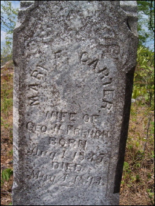 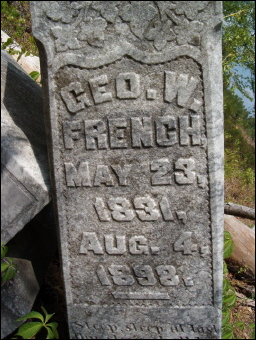
6.11 William J. French, b. 1855 in Line Creek, Greenville Co., SC. In the 1860 census, he was living with Jesse (53) his father, and Aletha L. French (35) in Line Creek, Greenville Co., SC.
Children of Zorababel B. and Elizabeth (Clark) French, 5.12
6.12 Sydney French, b. 1850 in Mobile Co., AL.
Children of Zorababel B. and Celia (Roberts) French, 5.12
6.13 David C. French, b. 1853 in Mobile Co., AL, appears in the 1860 census in AL, in the 1900 census in Mobile, AL, a boarder, married for 18 years since 1882, both of his parents born in Alabama, his wife is Annie, b. 1859.
6.14 William F. French, b. 1857 in AL.
Children of Joel E. and Nancy French, 5.13
6.15 Mary French, b. 1840 in Pickens Co., AL.
6.16 William H. French, b. 1842 in Pickens Co., AL.
6.17 Stephen (Sebron J.) French, b. 1847 in Pickens Co., AL.
6.18 Martha C. French, b. 1850 in Pickens Co., AL.
6.19 John R. M. French, b. 1853 in Tallahatchie, MS.
6.20* James C. French, b. Apr 1857 in Tallahatchie, MS, m. Elizabeth Lanthrip on 11 Dec 1879 in Tallahatchie, MS. In the 1900 census of Quitman, MS, he was living with his wife and 4 children: Rufus age 19, Sena age 15, Nancy age 10, and Evy age 4. In the 1920 census, he was living in Gulfport, Harrison Co., MS, married to Sarah Elizabeth, and he states that both his parents were born in MS. They had daughter Nancy, b. 1891 in MS who m. Joseph Linder and had son George C. Linder. In the 1930 census of Yalobusha, MI, John is 77, living with his wife Frances C., age 70, and with their 2 children Edna M. French, 32 (b. 1898 in Yalobusha, MS), and Clarence E. French 28 (b. 1902 in Yalobusha, MS).
Children of John and Lucinda (Bachelor) French, 5.18
6.21 Joseph Hilliard French, b. 1843 in Chambers Co., AL, d. 3 Dec 1926 in Daingerfield, TX, m1. Mary Louisa Porch on 8 Oct 1866 in Chambers Co., AL. She was b. in 1830, d. 1898 in Daingerfield, TX. Joseph m2. Arena Luvenia Gilmore Camp after 1898 in Daingerfield, TX. She was b. 1866, d. 1939 [4].
6.22 James (Jim) Washington French, b. 17 Ma 1846 in Beulah, Chambers Co., AL, d. 30 Jan 1891 in Cherokee Co., TX. He m. Nancy Elizabeth Treadaway on 11 Nov 1872 in Cherokee Co., TX, daughter of Richard Buffington Treadaway and Matilda A. Stipling. She was b. 11 Oct 1855 in AL, d. 25 Oct 1886 in Cherokee Co., TX [4].
6.23 George M. French, b. 1849 in Chambers Co., AL [4].
6.24 Susan French, b. 1852 [4].
6.25 Frances French, b. 1854 [4].
Children of George William Sr. and Amanda (Avary Higginbotham) French, 5.19
Of these 10 children, only 2 were men to carry on the surname French: George and John.
6.26 Nancy Elizabeth French, b. 4 Dec 1847 in Randolph Co., AL, d. 23 Sep 1911 in Randolph Co., AL [1]. She m. William Monroe Reaves, the brother of her sister MaryÕs husband. Nancy was WilliamÕs first wife; his second wife was Delancie Hubbard whom he married after Nancy had died. She died the same year as her father, only 4 months later, and is buried at the Union Baptist Church Cemetery in Newell, Randolph Co., AL. They had children William Jefferson, Amanda, Georgia Ann, Mattie Ellen, Etta, Elizabeth, Mamie, Charles Monroe, William Webster, Arbie Amanda, and Ettie Reaves, all in Randolph Co., AL [2].
6.27 Amanda Jane (A.J.) French, b. 1 Mar 1850 in Randolph Co., AL, d. 27 Feb 1927, m. John Francis Marion Higgenbotham [1].
6.28 Lavonia W. French, b. 1852 in AL [1].
6.29* George William French Jr., b. 10 Dec 1853 in Wedowee, Randolph Co., AL, d. 26 Oct 1920 in Randolph Co., AL, and was buried at Ava Methodist Church Cemetery in Randolph Co., AL (from Wedowee, north on Hwy 431 and junction County Road 56, Cemetery on left) [1]. He m. Jemima Bass on 23 Mar 1876 at Wedowee. She was b. 1856 in Randolph Co., AL, and d. 18 Dec 1919 in Randolph Co., AL. Related Randolph Co. AL ancestors are Alfred Pierce Sikes (b. 1857) and Mary Frances Fincher (b. 1858). Solomon Bass (b. 1822) and Sara George (b. 1826), Josiah A. Sikes (b. 1824) and Mary Cottle (b. 1825), Joseph Tarpley Fincher (b. 1826) and Matilda Ann Wyatt (b. 1833).
The 1880 census of Morrisons, Randolph Co., AL shows that George was living near his parents, age 26, born in AL, married to Jemima who was 22 in 1880 and born in AL. Her father was born in GA and mother in AL. Living with parents in the 1870 census of Randolph Co., AL, in Wedowee, age 16.
The 1900 census of Wedowee, Randolph Co., AL, shows George age 46, b. Dec 1853, both parents born in SC, married in 1877, living with 11 children.
The 1910 census of Randolph Co., AL shows George, age 56, b. ca. 1854 in AL, both parents born in SC, wife is Jemmie, age 53, living with 3 sons: Charles A age 28, Homer F. age 22, and Dewey age 12, all born in AL.
The 1920 census of Wedowee, Randolph Co., AL, shows George, age 66, b. ca. 1854, both parents born in SC, George is widowed, living with the Foster family (his daughter Alice Foster, age 34, born in AL, his grandson Edward age 7, his grandson George age 4, and his newly born grandson Raymond, all born in AL, and AliceÕs husband was born in Georgia).
6.30 Pinckney (Pink) G. French (female), b. 17 Mar 1855, d. 14 Oct 1912, m. John W. Davis [1]. Living with parents in the 1870 census of Randolph Co., AL, in Wedowee, age 13. She is buried at the Union Baptist Church Cemetery in Newell, Randolph Co., AL. John W. Davis was b. 10 Dec 1849, d. 18 Jan 1884.
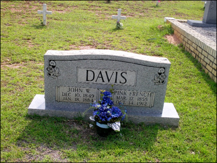
6.31 Mary F. French, b. 22 Nov 1857 in Randolph Co., AL, d. 21 Mar 1938 in Randolph Co., AL [1]. She m. James William Reaves, the brother of her sister NancyÕs husband. Mary is is buried at the Union Baptist Church Cemetery in Newell, Randolph Co., AL. Living with parents in the 1870 census of Randolph Co., AL, in Wedowee, age 11. James Reaves was b. 8 May 1853 in Carroll Co., GA and d. 24 Jan 1911 in Randolph Co., AL [2]. They had children Ava Rilla, Anne French, Jim Dance, Sheillie Newton, William, Mary Ann, Louisa Josephine, and Cora Lee Reaves, all in Randolph Co., AL [2].
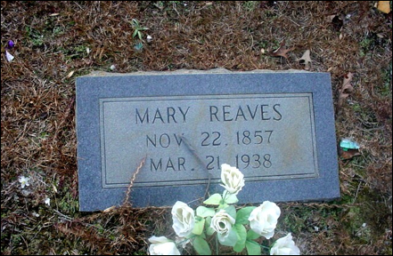
6.32 Sarah Emily French, b. 1858, m. Thomas Jeff Lipham [1]. Living with parents in the 1870 census of Randolph Co., AL, in Wedowee, age 10.
6.33 Lucinda (Cindy) M. French, b. May 1860 in AL, d. 6 May 1958, m. John C. Boyd on 11 May 1881. John was b. Apr 1860 in Randolph Co., AL [1]. The 1880 census of Morrisons, Randolph Co., AL shows that Cindy was born in 1862 in AL, age 18, and was living with her parents in 1880. It further states that both her parents were born in SC. Living with parents in the 1870 census of Randolph Co., AL, in Wedowee, age 8.
6.34 John R. French, b. 1863 in AL [1]. The 1880 census of Morrisons, Randolph Co., AL shows that John was born in 1863 in AL, age 17, and was working on the farm and living with his parents in 1880. It further states that both his parents were born in SC. Living with parents in the 1870 census of Randolph Co., AL, in Wedowee, age 7.
6.35 Louisa Jane French, b. 1869, d. 1893 [1] or 1875 per the gravestone of her father. She is is buried at the Union Baptist Church Cemetery in Newell, Randolph Co., AL. Living with parents in the 1870 census of Randolph Co., AL, in Wedowee, age 1.
Children of Willis and Samantha E. (Harris) French, 5.22
6.36 T. Joseph French, b. May 1860 in AL [4].
6.37 Sallie French, b. 1862 in AL, d. after 1921 in Newell, AL. She m. G. H. Traylor who d. after 1921 in Newell, AL [4].
6.38 Mary French, b. 1865 in AL [4].
NOTE: Details of the following material can be found on Fred Williams research at http://www.frenchfamilyassoc.com/FFA/CHARTS/Chart136/DescendantReport-8.pdf.
Seventh Generation
Children of James Fred and Harriet C. (Bell) French, 6.3
7.1* Thomas Jefferson French, b. 4 Aug 1852 in Gordon Co., GA, d. 12 Oct 1930 in Calhoun, Gordon Co., GA, m. Elizabeth Moss on 12 Dec 1872. She was b. 8 Dec 1854 in Calhoun, Gordon Co., GA, d. 30 Mar 1941 in Calhoun, Gordon Co., GA.
Children of William G. and Mary Francis (Carter) French, 6.4
7.2 Infant French.
7.3 Sally John French, b. ca. 1869.
7.4 Jamie French, m. Henry Charles.
7.5 Annie Mary French, m. William Aiken Cooley when he was 20 years old. She d. 17 May 1919. They had children William Clarence Cooley of Greenville; Mary Cooley who married and moved to Goldsboro, NC; French Cooley who married and associated with his father on the home farm; and Kitty Cooley who married and moved to Batesburg. William Aiken Cooley managed the old homestead in Anderson County. He was a Baptist and a member of the Woodmen of the World [27].
7.6* Jesse Lafayette French, m. Lida (or Lidie S. Garlington) Jane Lark and had 7 children. These children were Jesse L., George W., Cullen L., Marie Jean, Ethel, Jessie, and Lleulee. Lida was b. 16 Apr 1862 and d. 8 Dec 1930 and is buried at the Springwood Cemetery in Greenville, Greenville Co., SC. Lida L. French granted J. L. French (her oldest son) 10 acres of land in 1902 in Greenville Co., SC, known as A. Dunklin Tp.
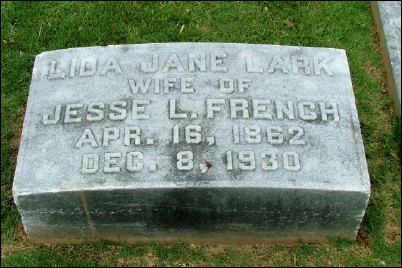
Children of Joel Ellison and Mary Frances (Myars) French, 6.6
7.7* James William French, b. Nov 1867 in AL. His father was born in GA and his mother in AL. He m. Annie B. in 1893. Annie was b. in Aug 1870 in AL. The cemetery in Pickens Co. has a section for white people and a section for black. The French people are fenced in the middle of the black cemetery called Hargrove.
Children of William Arnold and Judith Ann (Raiford) French, 6.9
7.8 William Arnold Raiford French, (known as WAR French), b. ca. 1851. No known descendants. He was a physician and helped built the French Hotel which stood on Ward Street in Senatobia.
Children of William Arnold and Eliza Ann (McGee) French, 6.9
Of these 13 children, 6 died before adulthood, 4 others died before age 32, and only 3 lived to marry and have a family. This marriage occurred in Sep 1859.
7.9 Mary T. French, b. 3 May 1853, d. 21 Apr 1860 and is buried at the Bethesda, MS, cemetery.
7.10 Pinkney H. French, b. ca. 1861 in MS, died at age 32, on 20 Mar 1893, and is buried at the Bethesda, MS, cemetery.
7.11 Minnie Lee French, b. 19 Aug 1862, d. 13 Feb 1864 and is buried at the Bethesda, MS, cemetery.
7.12 George French, b. ca. 1864 in MS. He was a salesman and lived in Memphis, TN.
7.13 Lilly French, b. 28 Feb 1866 in MS, m. Halcott Inscoe Gill on 26 Jan 1886 and lived in Senatobia next to the Court House. She d. 23 Aug 1903 at age 37. They had 3 children: Harry Gill, Annette Gill, and Agnes Gill.
7.14 Burrell (Butlar or Butler) M. French, b. ca. 1867 in MS, d. at age 24, ca. 1891 and is buried at the Bethesda, MS, cemetery.
7.15 Twin infant, b. 12 Jan 1868, d. 1 Feb 1868 and is buried at the Bethesda, MS, cemetery.
7.16 Twin infant, b. 12 Jan 1868, d. 10 Jun 1868 and is buried at the Bethesda, MS, cemetery.
7.17 Ina M. French, b. 15 Aug 1869, d. 22 Mar 1870 and is buried at the Bethesda, MS, cemetery.
7.18* Arnold French, b. 2 May 1871. He was in the grocery business in Sentobia, Tate Co., MS, moving there in 1857. He m. Lora Estelle Ligon on 18 Aug 1895 (a double wedding ceremony with his sister). Arnold d. 13 Nov 1960 most likely in Los Angeles, CA. Lora was b. 12 Mar 1874, d. 26 Dec 1955. They had son Raiford Pinckney French who carried on the name Raiford even though he was not related to the Raiford family by blood. The middle name Pinckney was chosen after the Pinckney who signed the Constitution, Charles Pinckney, who was from Charleston, SC.
7.19 Annie M. French, b. 21 Apr 1873, m. D. M. Cooley on 18 Aug 1895 (a double wedding ceremony with her brother), d. 30 Oct 1899 at age 26 and is buried at the Bethesda, MS, cemetery.
7.20 Infant born Dec 8, 1873, d. 16 Dec 1873 and is buried at the Bethesda, MS, cemetery.
7.21 Jessie French (female), b. May 1877 in MS, m. Lora Ligon, took over ownership of the French Hotel until he died. He had son Raiford P. French, b. 1896, and E. Arnold French, b. 1898. Jesse was still living in Senatobia at age 53 in the 1930 census.
Children of George W. and Mary (Carter) French, 6.10
7.22 Ella Jane French, b. 1858 in Line Creek, Greenville Co., SC.
7.23 Jesse Lafayette French, b. 1860 in Line Creek, Greenville Co., SC.
The 1900 census lists Jesse L. French in Dunklin, Greenville Co., SC, age 40, b. Sep 1859 in SC, spouse Lida Lark French, m. 1887, both his parents were born in SC, and they are living with their children: George (10), Cullen L. (9), Marie Jean (7), Ethel (5), and Jessie (female) (3), and Lleulee (female).
The 1910 census of South Carolina lists George W. French, the son of Jesse Lark French and Lila French, both of SC, living in 1910 in Greenville Ward 6, Greenville, SC. George is living with his parents and his siblings: Carter (18), Virginia (17), Ethel (12), Jesse (12), Lerdo (9). The 1850 census of SC list George W. French, b. 1831, age 19, Living with his parents Jesse (45) and Alley (46), and no other French. Records are from Marie French who documented the French Bible. Lida LarkÕs brother was named Cullen, a Confederate Civil war soldier. Marie Jean married Rev Haley who has done some genealogical research on the family and was convinced Samuel was the father of John Peter French, but there is no proof.
7.24 Mary A. French, b. 1862 in Dunklin, Greenville Co., SC.
7.25 Infant French, b. 5 May 1864 in Dunklin, Greenville Co., SC, d. 25 Jul 1865, at 8 months and 20 days, the infant of GW and MF French, buried at the Carter Family Cemetery in Princeton, Laurens Co., SC.
7.26 Alsy Lizzie French, or Elizabeth Elsie French, b. 1867 in Dunklin, Greenville Co., SC. She m. Seth Ward Scruggs in Greenville Co., SC.
7.27 Sarah (Sallie) A. or Sallie John French, b. 1870 in Dunklin, Greenville Co., SC, d. 8 Jul 1880 at 10 years, 6 months, and 16 days, daughter of GW and MF French, buried at the Carter Family Cemetery in Princeton, Laurens Co., SC.
Children of James C. and Elizabeth (Lanthrip) French, 6.20
7.28 Rufus French, b. 1881 in Tallahatchie, MS.
7.29 Sena French, b. 1885 in Tallahatchie, MS.
7.30 Nancy French, b. 1890 in Tallahatchie, MS, m. Joseph Linder and had son George C. Linder.
7.31 Evy French, b. 1896 in Tallahatchie, MS.
7.32 Edna M. French, b. 1898 in Yalobusha, MS.
7.33 Clarence E. French, b. 1902 in Yalobusha, MS.
Children of George William Jr. and Jemima (Bass) French, 6.29
7.34* George William French, b. 23 May 1877 in AL, d. 5 Oct 1970, m. Texie Smith who was b. 21 Feb 1880, d. 2 Apr 1962, both buried at the Ava Methodist Church Cemetery, Township 19, Range 11, Section 27, Randolph Co., AL, 1767 Old Highway 431-Wedowee. They had son Arthur Hames French, b. 7 Jun 1899, d. 12 Aug 1901 at age 2. In the 1900 census, George was living next door to his parents in Wedowee, Randolph Co., AL, age 23, with his wife Sarah, age 19, born in 1881 in AL, and with their son Arthur born in Jun 1899 in AL.
7.35 John Robert French, b. Oct 1878 in AL, is listed in the 1880 census of Morrisons, Randolph Co., AL. He m. Martha Leola Sikes, the sister of his brotherÕs wife, James. He was living with his parents in the 1900 census of Wedowee, Randolph Co., AL.
7.36 Lulu C. French, b. 9 Oct 1880, d. 19 Apr 1947, buried at the Ava Methodist Church Cemetery, Township 19, Range 11, Section 27, Randolph Co., AL, 1767 Old Highway 431-Wedowee. She m. Charlie McManus who was b. 25 Apr 1880 and d. 20 Oct 1953 in Randolph Co., AL. She was living with his parents in the 1900 census of Wedowee, Randolph Co., AL.
7.37 Charles Augustus French, b. Mar 1882 in AL, living with his parents in the 1910 census of Randolph Co., AL. He was living with his parents in the 1900 census of Wedowee, Randolph Co., AL.
7.38* James Monroe French, b. 13 Mar 1884 in Wedowee, Randolph Co., AL, d. 25 Mar 1947 in Randolph Co., AL, m. Mary Ella Sikes on 5 Jul 1904. She was b. 10 Jan 1889, d. 15 Jan 1962. Both are buried at the Ava Methodist Church Cemetery, Township 19, Range 11, Section 27, Randolph Co., AL, 1767 Old Highway 431-Wedowee [4]. He was living with his parents in the 1900 census of Wedowee, Randolph Co., AL. They had daughter Mary French, b. 6 Jul 1920, who m. Robert K. Cone.
7.39 Mary Alice French, b. 5 Dec 1885, d. 22 Aug 1974, m. R. Foster who was born in Georgia. They are buried at the Ava Methodist Church Cemetery, Township 19, Range 11, Section 27, Randolph Co., AL, 1767 Old Highway 431-Wedowee. They had children Edward, born 1913, George born 1916, and Raymond born 1920, all in AL, according to the 1920 census. She was living with his parents in the 1900 census of Wedowee, Randolph Co., AL.
7.40 Homer F. French, b. 27 Oct 1887 in AL, d. 6 Jan 1956, m. Exa Matilda Kirby who was b. 19 Nov 1892, d. 15 Jan 1962, the dau. of Wm. Terry Kirby Jr. and Nancy Elizabeth Traylor. Both are buried at the Ava Methodist Church Cemetery, Township 19, Range 11, Section 27, Randolph Co., AL, 1767 Old Highway 431-Wedowee. He was age 22 living with his parents in the 1910 census of Randolph Co., AL. He was living with his parents in the 1900 census of Wedowee, Randolph Co., AL.
7.41 Louisa N. French, b. Jul 1890 in AL. She was living with his parents in the 1900 census of Wedowee, Randolph Co., AL.
7.42 Solomon David French, b. Oct 1891 in AL. He was living with his parents in the 1900 census of Wedowee, Randolph Co., AL.
7.43 Josiah Charles French, b. Apr 1894 in AL. He was living with his parents in the 1900 census of Wedowee, Randolph Co., AL.
7.44 Dewey F. French, b. Dec 1898 in AL, living with his parents in the 1910 census of Randolph Co., AL. He was living with his parents in the 1900 census of Wedowee, Randolph Co., AL. He m. Delia and had 6 children who are listed in the 1930 census of La Grange, Troup Co., GA: Ruby, Catheline, Willie S., Evelyn, Essie M., and Thomas G.
Eighth Generation
Children of Thomas Jefferson and Elizabeth (Moss) French, 7.1
8.1 Joseph E. Johnston French, b. 2 Sep 1873 in Calhoun, Gordon Co., GA, d. 8 Jun 1946 in Calhoun, Gordon Co., GA, m. Lillian Agnes Cross Thomason who was b. 18 Feb 1878 and d. 18 Jun 1920.
8.2 James Thomas French, b. 29 Mar 1878.
8.3 Benjamin Franklin French, b. 25 Oct 1880.
8.4 Lillie Victoria French, b. 27 Mar 1888.
8.5 Stella Mae French, b. 26 Oct 1890.
Children of Jesse L. and Lida (Lark) French, 7.6
8.6 Jesse Lark French, b. 8 Oct 1888, d. 12 May 1889, and is buried at the Carter Family Cemetery, Princeton, Laurens Co., SC.
8.7 George W. French, m. Ella Peck.
8.8 Cullen L. French, m. Gladys Luck.
8.9 Marie Jane French, m. Julius C. Haley.
8.10 Ethel French, m. Broadus W. Martin.
8.11 Jessie French, m. George Pegram.
8.12 Lleulee Eleanor French, m. Oliver Slaton Woollard.
Children of James W. and Annie B. French, 7.7
8.13* Ellison Chappell French, b. ca. 1895 in AL, lived in 1930 in Youngstown, Mahoning Co., OH. In 1900, Ellis lived in Gordo, Pickens Co., AL, white, the son of James D. French and Annie B. French, both born in AL. – add to next generation their son James Eugene, and his son Herb and Linda Dawson. In the 1920 census, he lived in Gordo.
8.14 Willis Homer French, b. 26 Jun 1901 in Gordo, Pickens Co., AL, white. He d. Jun 1967 in Gordo, Pickens Co, AL. He appears in Gordo in both the 1920 and 1930 census records.
8.15 Lillian R. French, b. ca. 1909 in Gordo, Pickens Co., AL. In the 1920 census, she lived in Gordo.
Children of Arnold and Lora Estelle (Ligon) French, 7.18
8.16* Raiford Pinckney French, b. 22 Jul 1896 in Senatobia, MS, d. 28 Dec 1972 in Los Angeles, CA. He carried on the name Raiford even though he was not related to the Raiford family by blood. The middle name Pinckney was chosen after the Pinckney who signed the Constitution, Charles Pinckney, who was from Charleston, SC. He m1. Gibbs and had daughter Elizabeth. He m2. Marion Chloe Manwell who was b. 1 Oct 1891 in OH, and d. 31 Dec 1981 in Los Angeles, CA, at age 90. They had 2 children.
8.17 Lora French, b. 17 Aug 1903 in Senatobia, MS, d. 1975 in Los Angeles, CA, m. Clarence Richard Simmons on 24 Nov 1921 in Los Angeles, CA. He was b. 9 Aug 1898 and they had son Clarence Richard Simmons.
8.18 Douglas French, b. 1912 in Sentobia, MS, d. 1912 in Sentobia MS in infancy.
8.19 Arnold French, b. 1898 in Sentobia, MS, d. 1958 in Englewood, CA at age 60.
8.20 George French, b. 1908.
8.21 Edward French, b. 1905 in Sentobia, MS, d. 1910 in Senatobia, MS at age 5.
8.22 Wait Ligon (Dooley) French, b. 1900 in Sentobia, MS, d. 1952 in Los Angeles, CA, at age 52.
8.23 Josephine French, b. 1910 or after in Senatobia, MS, m. Prentis Elder Moore and had 2 children: Christopher Minor Moore and Prentiss Arnold Moore.
Children of George W. and Sarah French, 7.34
8.24 Arthur Hames French, b. 7 Jun 1899, d. 12 Aug 1901 at age 2.
Children of James Monroe and Mary Ella (Sikes) French, 7.38
8.25* George Alfred French, b. 20 Feb 1913 in Wedowee, Randolph Co., AL, m1. Annie Louise turner, m2. Annie Grace Harvey, he d. 1 Oct 1993 in Orangeburg, Orangeburg Co., SC [4].
Ninth Generation
Children of Raiford Pinckney and (Gibbs) French, 8.16
9.1 Elizabeth Hope French, b. 10 Jun 1919 in Chicago, IL, d. 14 May 2002 in Santa Rosa, CA at age 82. She m. John Benjamin Waldrep on 17 Sep 1935 in Los Angeles, CA. He was b. 22 Jul 1917 in Los Angeles, CA, and d. 30 Nov 1989 in Santa Rosa, CA. They had 4 children: Betty Joyce, Jack, Judy Kathleen, and Marion Jill.
Children of Raiford Pinckeny and Marion Chloe (Manwell) French, 8.16
9.2* Raiford Ligon French, b. 6 Jan 1931 in Los Angeles, CA, m1. Gibbs, m2. Camille Davis on 7 May 1958 in Temple City, CA. She was b. 18 Sep 1931 in Utah and d. 28 Sep 1983 in Heber City, Utah. They had 2 children.
9.3 Marion Joy French, b. 27 Aug 1932, m. Ronald Paris.
Children of George Alfred French, Sr., 8.25
9.4 George Alfred French, Jr., was adopted by the Williams family? and changed his name legally to Fred Williams [4].
Tenth Generation
Children of Raiford Ligon and Camille (Davis) French, 9.2
10.1 Raiford Davis French, b. 30 Mar 1962.
10.2 Paige Camille French, b. 30 Jun 1963. She died 16 Feb 2012 in Aberdeen, Washington.
Paige Camille French, 48, Aberdeen resident and In-Home Caregiver in the Aberdeen area, died February 16, 2012 at her home in Aberdeen, WA. A time of reflection will take place at New Beginnings Open Bible Church in Aberdeen on Sunday February 26th during normal service time starting at 10:00 AM. Cremation arrangements are though Fern Hill Funeral Home in Aberdeen, WA www.fernhillfuneral.com.
Bibliography and Records
[1] See website: http://wc.rootsweb.ancestry.com/cgi-bin/igm.cgi?op=GET&db=jamescottle&id=I1627, contact Merrie at footprpintsofthepast@verizon.net, contains 47 Frenches, most of them living and not shown. Email no longer valid.
[2] Also look at http://familytreemaker.genealogy.com/users/b/l/a/Benjie-G-Blair/GENE11-0002.html. Mostly of the Reaves family. Benjie G. Blair, 4544 Al. Hwy 144, Ohatchee, AL 36271, (256) 892-2106. Email: bblair@jsucc.jsu.edu (email good in 2004, not good in 2011).
[3] Washington County, TN, Deeds, 1797-1817, Volume 2, by Loraine Bennett Rae. FFA F522.
[4] Fred Williams, frenchwilliams@embarqmail.com, 793 Litchfield Rd., Tallahassee, FL 32312, email good in 2011. He was born George Alfred French, Jr.
[5] Myra Williamson, Wanmyra@communicomm.com (email good in 2002, undeliverable in 2011), 527 Cannon St., Roanoke, AL. Myra passed away in Jun 2010. Please contact her daughter, Elizabeth Powell, for questions referring to Ref. [5]: email: ElizabethPowell@decosimo.com (email good in 2011).
[6] Linda French Dawson, texas44@comcast.net (email good in 2012). 211 West 36th St., Vancouver, WA 98660.
[7] Bobby D. Jones, 1306 Ivy Creek Dr., Mansfield, TX 76063, 817-473-2858, email: bjones1695@aol.com (email good in 2005).
[8] More on Augustus French: http://files.usgwarchives.org/al/randolph/cemeteries/ava.txt.
[9] Jen Lamore email: Jenlamore@sbcglobal.net (email good in 2009).
From "KY Bible Records, V. IV", from the KY DAR; French Bible, photostatic copy of record on stationery of Mrs. J. C. Haley, 400 Crescent Ave, Greenville, SC, with notation "copied from the old John P. French Bible" and signed by Marie French Haley. Sworn to before me this 2nd day of August at Greenville, SC, AD, 1962. Seal, John B. Jameson, Notary Public".
John P. French and Anna Stone were married Jan. 7, 1796.
Names of their children:
1. Sarah French b. Feb. 4, 1797
2. Jonathon French b. June 19, 1798
3. Mary French b. July 20, 1799
4. William French b. Feb. 9, 1801
5. George French b. Jan 20, 1802
6. James French b. Sept 9, 1803
7. Jesse French b. May 18, 1805, m. Mrs. Jane Smith of Greenville in 1856.
8. Eligah French b. Nov. 5, 1806
9. John French b. Jan. 28, 1808 [Did he go by John P. ?]
10. Washington French b. May 4, 1809
11. Elizabeth French b. Dec. 16, 1810
12. Zorabel French b. April 4, 1812
13. Joel b. Dec. 9, 1813
14. Anna French b. July 12, 1815
15. Ursula French b. 13th 1817 (no month given)
16. Nancy French b. Aug. 13, 1818
17. Asa French b. Jan 17, 1820, d. Feb. 14, 1902
[10] Jeanette French, jfrench1@earthlink.net (good in 2016).
[11] Gene Langford, email: genelangford@yahoo.com (good in 2011).
[12] Bonita Rownd, email good in 2016: bonitakr@gmail.com.
[13] email: wmsmtpl@bellsouth.net (good in 2010).
[14] The earliest French I find in ancestry.com in SC are born as follows in SC:
Mary b. 1799
Aletha J. French b. 1825
James French b. 1804 (1880 census)
Charity French b. 1799 (black) – living in Youngs, Laurens Co., SC in 1870
Franklin French b. 1854 (black) – living in Youngs, Laurens Co., SC in 1870
Prihney, French b. 1852 (black male) – probably Pinckney – living in Youngs, Laurens Co., SC in 1870
E. French, b. 1785 female
Jas French, b. 1804 (1860 census)
Sara French, b. 1787
James French, b. 1803 (1850 census)
Elizabeth French, b. 1788
Rebecca French, b. 1780
Michael M. French, b. 1790 (1850 census, not part of FFA Chart #136)
[15] Raiford French, living in Aberdeen, WA, email: raifrench@cni.net (email good in 2011).
[16] Raiford Pittman, email: raiford@panola.com, email good in 2002: William D (R.?) Raiford of Edgefield Co., SC, son of Philip Ephraim Raiford V and Elizabeth Daniel, dau of William Daniel, married Elizabeth Lark. They were in Marshall County, MS before the 1850 census. William Raiford was teh eldest and my gggrandfather Robert Andrew Raiford, Sr.'s brother. Robert and three of his brothers were in Marshall Co., before the 1840 census, and brother William and the youngest, Elizabeth Raiford joined them before the 1850 census.
There is a connection between the Raifords, the Larks and the French families because the is a Raiford Ligon French with whom I am in contact. Raiford's French ancestors were in Arkabutla, Desoto Co., MS, a county contiguous with Marshall Co., when my ancestors were in Marshall Co., and later in Senatobia. Senatobia is a county that was carved out of Marshall Co., Desoto Co., and Tunica Co. to the NW in 1873. Raiford has in his possession a letter written to "Cousin Lida Lark" of SC in the early 1900s.
Tate Co. had beaucoup Raifords living there in the late 1800s when Raiford's ancestor built the French Hotel in Senatobia.
Although Elizabeth Lark Raiford is not in my direct line, it would help to sort out all of the Raiford men and women who were getting married, seemingly in droves, in both Marshall and Tate counties from 1850 to the late 1890s.
[17] removed
[18] Deb Skoff, email: skoff@comcast.net (good in 2012).
[19] Maidie Strellman, email: busyme@wavecable.com. (good in 2012). Maidie Strellman,
6835 Kenfig Pl. SW, Port Orchard WA 98367.
[20] George is found living in Laurens County in Dec 1843 on this website (search for George French): http://www.ba044ancestry.com/MATLOCKMISC/LandandDeedRecords/SouthCarolinaLandandDeedRecords.html
[21] DNA Test Gp 4 Blog for FFA Chart #136: http://frenchresearchers.blogspot.com/2011/02/f144722-group-4-george-french.html.
[22] Buried at Bethesda: http://www.msgw.org/tate/refer.html (search for French).
GEORGE FRENCH, Jan 20, 1803-Oct 3, 1868
POLLY ANN FRENCH, June 13, 1813-June 3, 1874
B.M.FRENCH, age 24 yrs
P.H.FRENCH, age 32 yrs
MRS. ANNIE FRENCH C. age 26 yrs
INFANT 40 days
MARY T. FRENCH, May 3, 1853-April 21, 1860
MINNIE LEE FRENCH, Aug 19, 1862-Feb 13, 1864
INA M. FRENCH, Aug 15, 1869-Mar 22, 1870
Twin Infants of W.A. & E.A. FRENCH, born Jan 12, 1868, and died Feb 1, & June 10, 1868
Infant born Dec 8, 1873-Dec 16, 1873
DR.W.A.FRENCH, Nov 15, 1829-Dec 20, 1903
E.A.FRENCH, Jan 5, 1839-May 15, 1912
ARNOLD FRENCH COOLEY, Oct 22, 1899-Nov 30, 1899
ANNIE FRENCH COOLEY, Apr 21, 1873-Oct 30, 1899
PINK FRENCH, June 3, 1861-Mar 20, 1893
LILY FRENCH GILL, Feb 28, 1865-Aug 23, 1903, married Jan 26, 1886
HALCOT I. GILL, 1857-1919
Source: A History of Tate County 1975, Footprints in Time, Tate County Marriages.
[23] George FrenchÕs name is listed in the 1790 census between that of Robert Peter and Thomas Slater. George French must have left Montgomery Co., MD, shortly after the 1790 census and after he signed as a witness on 24 Sep 1791 in Montgomery Co., Maryland. Could George have gone to Maryland before going to Greenville, SC? Who is Thomas French?
Ref. [4] states that he is in the 1790 census of Rockville, Montgomery Co., MD. There is a George Frinch (French) listed in Montgomery Co., MD with 4 free white males under 16, and 1 free white male over 16 who would have been George at age 41. Also listed are 6 free white females of all ages.
In the 1790 US Census of Montgomery Co., Maryland, George is listed with 11 persons. Not listed here are 2 daughters who were born after 1790, and Aaron who was born after 1790.
4 free white males after 16, born after 1774, John,
Jacob, James, George Jr.
1 free white male 16+, George French Sr.
6 free white females, wife, and 5 daughters
Charles County Land Records 1790-1792; Liber K#4; Page 536. Dec 7, 1792 from George French of Montgomery County, heir at law to the late Thomas French of Baltimore County, to Thomas Langton of Baltimore town in Baltimore County, for and in consideration of sd Thomas French in his lifetime having sold to James Clarke of Baltimore in Baltimore County, a tract of land called Beauty, lying in CC containing 110 acres and sd Thomas French, by his bond of conveyance given to sd James Clarke, therein obliged himself to make over to sd Clarke, when required, a deed to the afd tract called Beauty, for which sd Thomas French, in his lifetime, was fully paid by sd Clarke, and sd Clarke having sold all his right to sd Beauty in 1778 to the afd Thomas Langton, who began an action of ejectment against Charles Goodrick, late of CC, as lessee of the afd Thomas French, decd, and in sd Court, to wit, Jun Term 1788, did obtain a judgment for ejectment against sd Goodrick. Now I, sd George French, for and in consideration of the foregoing, and for 1 penny to me in hand paid by sd Thomas Langton, I have sold to Langton the land called Beauty in CC, bounded by Moores Ditch, containing about 110 acres. Signed - George French. Wit - John Hollins, Jas Calhoun. This deed was acknowledged in Baltimore County before sd County JPs, Geo Salmon and Jas Calhoun. Certified by Wm Gibson, Clk, B County. Recorded Dec 17, 1792.
1791 9/24/1791 Maryland Montgomery ONEIL Bernard Elizabeth Deed September 24, 1791-September 24, 1791 Folio 664 Bernard O'Neil to Joseph Watson part of tract called "Friendship" 8 1/4 a. Wit.: George French, Charles Magruder. Elizabeth O'Neil, wife of Bernard O'Neil concurs Land Records Of Montgomery County, Maryland Liber D Sween Library, Rockville, Montgomery County, Maryland.
[24] John French served in the War of 1812 as a Private in NashÕs Regiment, South Carolina Volunteers. This John is listed as born 2 Nov 1760 in Richmond Co., VA, brother of Hugh French Sr., of FFA Chart #36.
[25] 1790 Census of South Carolina. Samuel French could be a brother of George French from Greenville, SC, but so far we have no records that indicate this.
Ref. [6] states that SamuelÕs property is in the same general area as John Peter FrenchÕs property of this line. Jacob French also turns up in this neck of the woods, but both may have decided that Greenville was a poor farming area. The section of land along the Saluda River is very hilly with many trees and definitely not flat. John Peter FrenchÕs son, Jesse, owned 1800 acres along the Saluda River when he died. His land was on both sides of Highway 76 near Princeton. Ref. [6] has been to this area many times and has seen the French name all over the area. She has scoured the Courthouse records in Greenville and Anderson Counties and believes she has all that there is for this family [6].
Ref. [4] says No. It has been thought that Samuel French was a brother of George French (both born ca. 1730) simply because they both appear in Greenville, SC, at the same time; however, Ref. [4] shows otherwise: A long ago I found Samuel and in fact wrote a brief history of what I could find. I believe Linda, Rai and I all thought he was the missing ancestor. Further research is needed, but he appears to have lived in North Carolina (1750-1786), South Carolina (1790), and may have moved to Kentucky with his son Benjamin. I finally traced ÒaÓ Samuel French to Limestone County, Alabama where he was living with Benjamin when he died on August 13, 1834. This is from FFA Chart #146.
[26] Carolyn Golowka, email: scgengal@gmail.com (good in 2012).
[27] History of South Carolina, by Richard Manning, copyright 1920 by the Lewis Publishing Company, book found on Google books.
[28] Vicki French Carroll, email: BVCarroll@aol.com (good in 2016).
[29] Mark R. French, email: markfrench@wildblue.net (good in 2012).